Videojuego de carreras para dos jugadores en el navegador con plataforma web, tienda de monedas virtuales y publicidad simulada
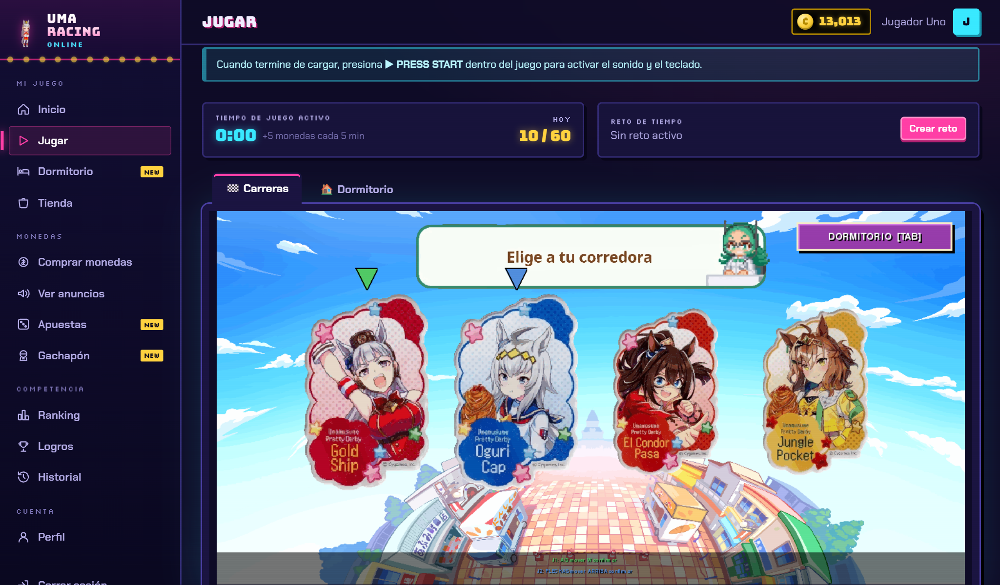
| Proyecto | UmaRacing Online — Proyecto 3: Videojuego con publicidad |
| Materia | Programación Web |
| Docente | Francisco Hunahpu Sahagún González |
| Integrantes | Javier Antonio Rodríguez Morales Marco Antonio Muñoz Malpica José Oliver Guzmán Camacho |
| Grupo | C |
| Fecha de entrega | 30/10/2026 (avance) · 06/11/2026 (versión final) |
| Versión del documento | 0.3 (avance: secciones 1–10) — 30/10/2026 |
| Repositorio Git | github.com/JavierRodriguezzz/Uma-Racing (rama develop) |
| Sistema desplegado | Sin desplegar en esta entrega; el sistema se ejecuta en local (instrucciones en el README del repositorio). |
La portada identifica el proyecto, la materia, el docente, el equipo, el grupo, la versión y los enlaces del sistema. La siguiente tabla registra los cambios de este documento.
| Versión | Fecha | Responsable | Descripción del cambio |
|---|---|---|---|
| 0.1 | 07/10/2026 | Javier A. Rodríguez Morales | Primera versión con las 16 secciones de los lineamientos, generada a partir del código, la base de datos, las pruebas y el historial Git del repositorio. |
| 0.2 | 28/10/2026 | Javier A. Rodríguez Morales | Se agrega el módulo de dormitorio 3D (chibis con IA, muebles y acomodo validado por el servidor): 3 tablas nuevas, 1 router, 3 reglas de negocio, 7 pruebas automatizadas y 1 manual. Se actualizan cifras, diagramas, capturas, endpoints, cronograma (responsables por módulo y fecha de entrega) y trazabilidad. |
| 1.0 | 06/11/2026 (planeada) | Equipo | Versión final: secciones 11 a 16 revisadas, despliegue y enlaces definitivos. |
El PDF se genera con docs/documentacion/generar.py. El diccionario de datos y los diagramas ER se leen de database/schema.sql; la tabla de endpoints, de los routers de FastAPI; el historial, de Git; y las capturas, del sistema en ejecución. Así la documentación corresponde con el sistema realmente implementado. Lo que queda resaltado en amarillo es trabajo planeado para la versión final.
Esta versión de avance comprende las secciones 1 a 10 de los lineamientos (hasta Diseño y documentación de la API) y los anexos técnicos que estas citan. Las referencias a las secciones 11 a 16 (módulos, seguridad, pruebas, instalación y control de versiones, resultados y trazabilidad) corresponden a la versión final del documento.
Problema atendido. UmaRacing era un juego de carreras para dos personas en el mismo teclado, hecho en Python con pygame. Solo funcionaba en escritorio: no guardaba partidas, puntajes ni progreso, no tenía cuentas de usuario y no ofrecía ninguna forma de sostener su operación. Tampoco había manera de medir cómo se usaba.
Usuarios principales. El jugador, que crea su cuenta, juega en el navegador, gana y gasta monedas virtuales y compite en el ranking; el invitado, que juega como Jugador 2 en el mismo teclado sin cuenta; y el administrador, que gestiona catálogo, anuncios, logros, paquetes, usuarios y reportes.
Solución propuesta. Se convirtió el juego en un sistema web cliente-servidor. El juego se compila a WebAssembly con pygbag y se ejecuta dentro del portal; cada carrera se registra a través de una API REST que valida el resultado en el servidor antes de otorgar puntos, monedas y logros. El portal incluye tienda de corredoras y escenarios, publicidad simulada con recompensa validada, compra de monedas con Google Pay en modo de prueba, monedas por tiempo de juego activo, apuestas con monedas virtuales sobre carreras simuladas por el servidor, gachapón con probabilidades públicas, un dormitorio 3D donde viven chibis con inteligencia artificial y se acomodan muebles comprados con monedas, ranking, logros, historial, dashboard, cuatro reportes con gráficas y una bitácora de operaciones.
Tecnologías. Juego: Python 3.11, pygame-ce y pygbag (WebAssembly). Frontend: HTML5, CSS3 y JavaScript con módulos ES, Chart.js, anime.js y three.js (dormitorio 3D). Backend: Python 3.11 con FastAPI, Uvicorn, PyMySQL, bcrypt y PyJWT. Base de datos: MariaDB 11.4 (compatible con MySQL 8 y XAMPP). Pruebas: pytest con el TestClient de FastAPI. Control de versiones: Git y GitHub.
Funciones más importantes. Autenticación con JWT revocable y contraseñas con bcrypt; permisos verificados en el servidor para dos roles; compras, reembolsos, pagos, apuestas y tiradas ejecutadas como transacciones con bloqueo de saldo; validación antitrampa de partidas y anuncios; libro mayor de monedas; búsqueda, filtros, ordenamiento y paginación; y reportes por rango de fechas con exportación a CSV.
Resultado alcanzado. La versión entregada es funcional y se puede demostrar de punta a punta:
Quedan pendientes el despliegue en contenedores (Docker y Portainer) y la distribución de commits entre todos los integrantes; ambos se detallan en las secciones 5 y 15.
Los juegos pequeños e independientes suelen distribuirse como ejecutables de escritorio. Es el caso de UmaRacing: para jugarlo hay que instalar Python y pygame, y al cerrar el programa se pierde todo. Esto genera tres problemas:
Objetivo general. Convertir el videojuego de escritorio UmaRacing en un sistema web cliente-servidor en el que cada carrera, compra y recompensa se registre y valide en el backend, con persistencia en una base de datos relacional, control de acceso por roles y estadísticas para la toma de decisiones, sin modificar la jugabilidad original.
Objetivos específicos (cada uno es verificable y se asocia a un módulo):
| ID | Objetivo | Módulo / evidencia |
|---|---|---|
| OE-1 | Ejecutar el juego en el navegador sin instalar nada, conservando su jugabilidad. | Juego (pygbag) — frontend/jugar.html, Figura ? |
| OE-2 | Registrar usuarios, autenticarlos con token y controlar permisos de dos roles en el servidor. | Autenticación y usuarios — CP-01 a CP-07 |
| OE-3 | Registrar cada partida y validar en el servidor su resultado antes de otorgar puntaje, monedas y logros. | Partidas y logros — CP-13 a CP-15 |
| OE-4 | Implementar una economía virtual consistente: tienda transaccional, libro mayor de monedas y reembolsos. | Tienda y monedero — CP-09 a CP-12 |
| OE-5 | Simular publicidad cuya recompensa solo se paga si el servidor mide la visualización completa. | Publicidad — CP-16 |
| OE-6 | Incorporar monetización simulada: Google Pay (TEST), tiempo de juego, apuestas y gachapón con límites responsables. | Monetización — CP-22 a CP-35 |
| OE-7 | Ofrecer dashboard, ranking, cuatro reportes por rango de fechas y una bitácora de operaciones. | Panel — CP-19, CP-21, Figuras ? y ? |
| OE-8 | Dar a las monedas un uso persistente con un dormitorio 3D: chibis autónomas y muebles que el jugador compra y acomoda, con el acomodo validado en el servidor. | Dormitorio — CP-36 a CP-42, Figura ? |
Funciones incluidas en la versión entregada. Registro, inicio y cierre de sesión; perfil y cambio de contraseña; juego en el navegador con candados según el inventario; registro y validación de partidas; puntaje, monedas y logros automáticos; tienda de corredoras y escenarios; publicidad simulada; compra de monedas con Google Pay (TEST); monedas por tiempo de juego; apuestas a carrera simulada y retos de tiempo; gachapón; dormitorio 3D con chibis autónomas, muebles y acomodo guardado en la cuenta; ranking; historial de partidas, compras y movimientos; dashboard por rol; CRUD de usuarios, artículos, anuncios, logros, paquetes y premios; ventas con reembolso; cuatro reportes con gráficas y CSV; y bitácora.
Roles contemplados. Administrador y jugador. El Jugador 2 es un invitado sin cuenta que comparte el teclado con el Jugador 1.
Procesos cubiertos. Alta de jugadores, ciclo de una partida, compra de artículos, obtención de monedas (partidas, anuncios, tiempo de juego, logros y Google Pay), gasto de monedas (tienda, dormitorio, apuestas y gachapón), reembolso, administración del catálogo y análisis de la operación.
Exclusiones deliberadas.
Restricciones. Proyecto académico de un semestre con tres integrantes. La infraestructura es local (XAMPP o MariaDB) y el despliegue en Docker está en preparación. El juego en el navegador depende del CDN de pygame-web para descargar el intérprete de Python para WebAssembly.
UmaRacing Online se plantea como un juego gratuito (free-to-play) para una comunidad de aficionados, operado por un estudio independiente pequeño. Se puede jugar completo sin pagar. Los ingresos vendrían de publicidad y de la venta opcional de monedas virtuales para contenido cosmético (corredoras, escenarios, chibis y muebles del dormitorio).
| Elemento | Descripción |
|---|---|
| Segmento de usuarios | Jugadores casuales de 15 a 30 años que juegan en pareja en una misma computadora (hermanos, amigos, compañeros) y aficionados a la franquicia de las corredoras. |
| Problema o necesidad | Un juego local rápido que no requiera instalación y que dé motivos para volver: progreso guardado, metas, competencia y contenido desbloqueable. |
| Propuesta de valor | Se juega gratis desde el navegador, el progreso se conserva entre sesiones, hay ranking semanal, logros y corredoras por desbloquear, y las reglas son justas y transparentes: el servidor valida resultados y las probabilidades del gachapón son públicas. |
| Proceso principal | Iniciar sesión → jugar carrera → el servidor valida y otorga puntaje, monedas y logros → el jugador gasta monedas en la tienda, el dormitorio, las apuestas o el gachapón → vuelve a jugar para subir en el ranking. |
| Usuarios que administran | Administrador (operación): catálogo, anuncios, logros, paquetes, premios, usuarios, reembolsos, reportes y bitácora. |
| Usuarios que consumen | Jugador registrado (Jugador 1) e invitado (Jugador 2). Indirectamente, los anunciantes, que pagan por visualizaciones completas. |
| Recursos necesarios | Servidor con Docker (API + MariaDB + Nginx), dominio y certificado TLS, cuenta de comerciante y pasarela de pago, CDN para los paquetes del juego y personal de operación y soporte. |
| Costos de operación (estimados) | Hospedaje (VPS) de unos $150–$300 MXN al mes; dominio de unos $250 MXN al año; comisión de la pasarela por cada cobro; respaldos; y horas de mantenimiento. Las cifras son referenciales y no se cotizaron formalmente. |
| Sostenimiento / monetización | (1) Publicidad recompensada: el anunciante paga por visualización completa y el jugador recibe monedas, con un máximo de 5 al día. (2) Paquetes de monedas de $19 a $249 MXN mediante Google Pay. (3) Monedas por tiempo de juego y por partidas, que fomentan la retención sin pagar. Las apuestas y el gachapón solo usan monedas virtuales y tienen límites de juego responsable. |
| Indicadores de valor | Jugadores activos (registros en 7 días), partidas por día, porcentaje de victorias, uso de cada personaje, anuncios completados y su rendimiento, ingresos por paquete, monedas emitidas contra gastadas, partidas rechazadas por resultado sospechoso, apuestas y margen, y rarezas obtenidas en el gachapón. Todos se calculan en el dashboard y los reportes (sección 11). |
Las apuestas y el gachapón son mecánicas de azar. En el prototipo se usan solo con monedas virtuales sin valor monetario, con montos mínimos y máximos, pérdida neta máxima diaria y probabilidades públicas. Para una versión comercial, el equipo recomienda separar las monedas compradas de las que se usan para apostar, o retirar esas mecánicas, ya que con dinero real constituyen juego de azar regulado.
El desarrollo se organizó en fases con un entregable verificable cada una. La columna Real se obtuvo del historial Git (sección 14.4). Los responsables corresponden a la división por módulo del documento de planeación (docs/planeacion/Planeacion_Proyecto_Equipo01.pdf): Javier, núcleo de BD y API, autenticación, tienda y Google Pay; Marco, juego, partidas, logros, ranking, tiempo de juego, apuestas y base del frontend; José, publicidad, gachapón, usuarios y bitácora, dashboard y reportes, coordinación de pruebas y despliegue. Las fechas planeadas provienen de ese mismo documento de planeación.
| Fase | Planeado | Real | Responsable | Entregable estimado | Evidencia | Estado |
|---|---|---|---|---|---|---|
| Juego base | 22/09–30/09 | 01/10 | Marco A. Muñoz, José O. Guzmán | Juego de escritorio funcional para 2 jugadores con 4 corredoras | Commits abbf8d4–2574efd | Terminado |
| Análisis | 07/10–09/10 | 01/10–05/10 | Marco A. Muñoz, José O. Guzmán | RF, RNF, reglas de negocio y modelo de negocio | Secciones 4 y 6 de este documento | Terminado |
| Juego web | 13/10–15/10 | 05/10 | Marco A. Muñoz | Juego ejecutándose en el navegador con pygbag; imágenes optimizadas | 9f9c4d6, 626590e, bff8122 | Terminado |
| Diseño BD | 11/10–16/10 | 05/10 | Javier A. Rodríguez | Modelo ER en 3FN, schema.sql y seed.sql | ae0da38, sección 9 | Terminado |
| Backend | 15/10–29/10 | 05/10 | Equipo (por módulo) | API REST con JWT, roles, reglas de negocio y 21 pruebas | 8dfab45, c5fc71a | Terminado |
| Frontend | 15/10–30/10 | 05/10 | Marco A. Muñoz (base); cada uno sus pantallas | Portal del jugador, panel de administración e integración con el juego | 2763a2f, 8c3a077 | Terminado |
| Monetización | No planeada | 06/10 | Javier (Google Pay), Marco (tiempo y apuestas), José (gachapón) | Google Pay (TEST), tiempo de juego, apuestas, gachapón y 14 pruebas | 775b736–57224dd | Terminado |
| Rediseño UI | No planeado | 06/10 | Marco A. Muñoz | Tema “Arcade nocturno” con anime.js | 61f761c, sección 8.3 | Terminado |
| Pruebas | 21/10–02/11 | 05/10–07/10 | José O. Guzmán (coordina) y equipo | Matriz de pruebas y correcciones | Sección 13, e4b62e9, eb71cdb | Terminado |
| Dormitorio 3D | No planeado | 27/10 | Javier A. Rodríguez | Dormitorio con chibis (IA), muebles, tienda y acomodo conectados a la cuenta; 7 pruebas | ea6a8d4, secciones 11.4 y 13 | Terminado |
| Documentación | 09/10–05/11 | 07/10–… | Equipo | README y este PDF | 884725f, c71724c | En proceso |
| Despliegue | 28/10–02/11 | — | José O. Guzmán | Stack Docker (db, api, nginx) en Portainer desde GitHub | Sección 14.3 | Pendiente |
| Entrega | 06/11 | — | Equipo | Versión final: repositorio, PDF y demostración | Repo + PDF + demo | Pendiente |
| Entregable | Desviación | Causa | Acción correctiva |
|---|---|---|---|
| Juego en el navegador | Retraso por un error: el juego no cargaba fuera del servidor de pygbag. | pygbag reescribe las URL http://localhost:8… para pedir pygame a /cdn/ del mismo origen, y fallaba con module 'pygame' has no attribute 'mixer'. | Plantilla propia plantilla_juego/umaracing.tmpl que fija el CDN público, más una pantalla de carga (commit e4b62e9). |
| Análisis, BD, backend y frontend | Terminados antes de la fecha planeada (real 01/10–07/10 contra plan 07/10–30/10). | El juego base ya existía y el equipo trabajó la base del sistema web en jornadas intensivas al inicio del semestre, antes de formalizar el plan. | El plan se conservó como línea base; el tiempo ganado se usó para agregar la monetización y el dormitorio 3D, y para pruebas y documentación. |
| Monetización | Alcance agregado que no estaba en el plan inicial. | Se buscó un modelo de sostenimiento más completo que solo anuncios (sección 4). | Se implementó con sus propias pruebas (CP-22 a CP-35) sin afectar los módulos existentes. |
| Datos iniciales | Las cuentas de prueba empezaban con monedas y todo desbloqueado. | Los datos de demostración se usaban como datos iniciales. | Se separaron seed.sql (inicio limpio, todo en cero) y seed_demo.sql (60 días de actividad) en el commit eb71cdb. |
| Dormitorio 3D | Alcance agregado que no estaba en el plan. | Hacía falta un uso de las monedas que se conservara entre sesiones y diera motivos para volver (sección 4). | Se reutilizó la compra transaccional existente (mismo folio, logros y reembolsos) y se agregaron 7 pruebas (CP-36 a CP-42) sin cambiar las anteriores. Una BD ya creada debe recrearse con reiniciar_bd.py, porque no se escribió un script de migración. |
| Despliegue | Sin desplegar a la fecha de este documento. | Se priorizó cerrar funcionalidad y pruebas. | Stack Docker definido (sección 14.3). Mientras tanto se ejecuta en local con XAMPP o MariaDB. |
| Historial Git | Commits concentrados en pocos días y de un solo autor. | El trabajo se integró desde una sola computadora. | Se documenta la aportación de cada integrante por módulo (sección 14.4); desde esta entrega cada integrante sube sus cambios con su propia cuenta en ramas feature/…. |
| Repositorio | La rama develop no se podía subir al repositorio original. | La cuenta dueña del repositorio del juego base no dio permisos de escritura (error 403). | El 28/10/2026 se creó el repositorio público JavierRodriguezzz/Uma-Racing con todo el historial; el original queda como upstream. Marco y José fueron invitados como colaboradores. |
Dependencias entre tareas. El esquema de BD → los endpoints de la API → las pantallas del frontend → la integración del juego con la API (puente umaBridge) → las pruebas de punta a punta. Los reportes dependen de los datos de partidas y compras; las apuestas de tiempo dependen del registro de partidas; el dormitorio depende del catálogo y de la compra transaccional de la tienda.
| Tipo | Riesgo | Impacto | Plan de contingencia |
|---|---|---|---|
| Técnico | El intérprete de Python para WebAssembly se descarga del CDN de pygame-web; sin internet el juego web no carga. | Alto | Pantalla de carga con mensaje de error; el juego de escritorio (python game/main.py) funciona sin conexión. |
| Técnico | El dormitorio necesita WebGL y descarga three.js de jsDelivr y modelos 3D pesados; en equipos sin aceleración gráfica puede ir lento. | Medio | Es una sección aparte: si no carga, la carrera y el resto del portal siguen funcionando; el dormitorio deja de dibujar mientras no se ve. |
| Técnico | El cliente podría falsificar resultados, recompensas o precios. | Alto | Toda regla se valida en el servidor; los precios los fija la BD; los campos no esperados se rechazan (CP-15, CP-16 y CP-47). |
| Técnico | Condiciones de carrera: dos operaciones simultáneas gastan el mismo saldo. | Medio | Transacciones con SELECT … FOR UPDATE sobre el saldo, más el CHECK saldo_nuevo = saldo_anterior + monto. |
| Integración externa | Google Pay, CDN de pygame-web, cdnjs (Chart.js y anime.js), jsDelivr (three.js) y Google Fonts. | Medio | Google Pay incluye el botón “Simular pago de prueba”; las fuentes tienen respaldo del sistema. |
| Legal | Apuestas y gachapón con dinero real constituyen juego de azar regulado. | Alto | Solo modo TEST; PRODUCTION responde 501; monedas sin valor monetario. |
| Tiempo | Alcance agregado (monetización y dormitorio) y despliegue aún pendiente. | Medio | Ejecución local documentada como alternativa; despliegue en Docker como siguiente paso. |
| Equipo | Participación poco visible en Git de dos integrantes. | Alto | Responsables por módulo definidos en la planeación; aportación documentada en la sección 14.4 y commits con cuenta propia en ramas feature/…. |
| ID | Requerimiento | Descripción | Rol |
|---|---|---|---|
| RF-01 | Registrar usuario | Crear una cuenta de jugador con usuario, correo y contraseña segura; otorga 100 monedas de bienvenida y las corredoras gratuitas. | Público |
| RF-02 | Iniciar sesión | Autenticar con usuario o correo y contraseña; devuelve un token JWT de 8 horas. | Público |
| RF-03 | Cerrar sesión | Revocar el token en el servidor para que deje de ser válido. | Autenticado |
| RF-04 | Gestionar perfil | Consultar y editar nombre, biografía y corredora favorita; cambiar contraseña (cierra las demás sesiones). | Autenticado |
| RF-05 | Consultar catálogo | Listar artículos con búsqueda, filtros (tipo, sección del juego o del dormitorio, gratuito, poseído, precio), orden y paginación. | Autenticado |
| RF-06 | Comprar artículo | Comprar una corredora, escenario, chibi o mueble con monedas, en una transacción con folio único. Un mueble se puede comprar varias veces. | Jugador |
| RF-07 | Equipar escenario | Elegir el escenario del inventario que usará el juego. | Jugador |
| RF-08 | Jugar en el navegador | Ejecutar el juego en la plataforma; solo se pueden elegir las corredoras desbloqueadas. | Jugador |
| RF-09 | Registrar partida | Registrar el inicio y el resultado de cada carrera; el servidor valida, calcula puntaje y otorga monedas. | Jugador |
| RF-10 | Ver anuncio con recompensa | Iniciar un anuncio y reclamar la recompensa, que el servidor paga solo si se vio completo. | Jugador |
| RF-11 | Otorgar logros | Evaluar y otorgar automáticamente los logros cumplidos, con su recompensa. | Sistema |
| RF-12 | Consultar ranking | Ranking por periodo (semana, mes, total) y criterio (puntaje, victorias, mejor tiempo). | Autenticado |
| RF-13 | Consultar historial | Historial propio de partidas, compras, movimientos de monedas, apuestas y tiradas, con filtros. | Autenticado |
| RF-14 | Comprar monedas | Comprar paquetes de monedas con Google Pay en modo TEST. | Jugador |
| RF-15 | Monedas por tiempo de juego | Acreditar monedas por tiempo de juego activo, medido con latidos del servidor. | Jugador |
| RF-16 | Apostar a carrera simulada | Apostar monedas a una corredora; el servidor simula la carrera y paga según el momio. | Jugador |
| RF-17 | Reto de tiempo | Apostar a ganar la siguiente partida en menos de X segundos; se puede cancelar antes de jugar. | Jugador |
| RF-18 | Gachapón | Tirar 1 o 10 veces con probabilidades públicas y garantía de premio épico. | Jugador |
| RF-19 | Administrar usuarios | CRUD de usuarios con rol, activación, baja lógica y ajuste manual de monedas. | Admin |
| RF-20 | Administrar artículos | CRUD de corredoras, escenarios, chibis y muebles con activación, baja lógica y la opción “solo en el gachapón”. | Admin |
| RF-21 | Administrar anuncios | CRUD de anuncios simulados (duración, recompensa, color, anunciante). | Admin |
| RF-22 | Administrar logros | CRUD de logros (condición, meta, recompensa). | Admin |
| RF-23 | Administrar paquetes y premios | CRUD de paquetes de monedas y de premios del gachapón. | Admin |
| RF-24 | Ventas y reembolsos | Consultar ventas y reembolsar una compra (transacción). | Admin |
| RF-25 | Dashboard | Indicadores, gráficas, actividad reciente y alertas según el rol. | Autenticado |
| RF-26 | Reportes | Cuatro reportes por rango de fechas (partidas, ventas, economía y monetización), con gráficas y CSV. | Admin |
| RF-27 | Bitácora | Consultar el historial de operaciones con búsqueda y filtros por acción, entidad y fecha. | Admin |
| RF-28 | Dormitorio | Abrir el dormitorio (se crea la primera vez con los muebles gratuitos acomodados), ver a las chibis actuar solas, y colocar, girar o guardar muebles; el acomodo se guarda en la cuenta. | Jugador |
| RF-29 | Secciones del juego | Cambiar entre Carreras y Dormitorio con pestañas, el menú o la tecla TAB; la carrera queda en pausa y ese tiempo no cuenta en su duración. | Jugador |
| ID | Atributo | Requerimiento y cómo se cumple |
|---|---|---|
| RNF-01 | Seguridad | Contraseñas con bcrypt (costo 12); JWT HS256 firmado con un secreto de 32 caracteres o más leído de .env; sesiones revocables; permisos verificados en el servidor; consultas parametrizadas. |
| RNF-02 | Integridad | Las operaciones que tocan varias tablas usan transacciones con ROLLBACK; el saldo se bloquea con FOR UPDATE; CHECK, UNIQUE y claves foráneas en la BD. |
| RNF-03 | Rendimiento | Imágenes del juego pre-escaladas (de 40 MB a 1.7 MB, idénticas píxel a píxel); momios precalculados al arrancar; índices en columnas de búsqueda y fecha; paginación con límite de 100 registros. |
| RNF-04 | Compatibilidad | Navegadores modernos con WebAssembly (Chrome, Edge, Firefox); WebGL para el dormitorio 3D; MariaDB 10.6 o superior, o MySQL 8; Python 3.11. |
| RNF-05 | Usabilidad | Mensajes de error en español y comprensibles; estados de carga, vacío, error y éxito; confirmación en operaciones críticas; validación en tiempo real en formularios. |
| RNF-06 | Diseño responsivo | Se adapta a PC, laptop, tablet y smartphone (puntos de quiebre en 900 y 860 px, menú lateral plegable); verificado a 1366, 820 y 390 px de ancho. |
| RNF-07 | Accesibilidad | Contraste alto; los estados nunca se indican solo con color; paleta de gráficas apta para daltonismo; alternativa “ver como tabla” en las gráficas; aria-label y aria-current; se respeta prefers-reduced-motion. |
| RNF-08 | Mantenibilidad | Backend separado en routers, servicios, esquemas y seguridad; reglas puras en services/reglas.py; parámetros de negocio configurables por variables de entorno; 42 pruebas automatizadas; los datos de diseño de la IA del dormitorio (personalidades, horarios, guiones) están separados de su motor. |
| RNF-09 | Disponibilidad y robustez | Manejadores globales de errores: si la BD no responde se devuelve 503 con un mensaje claro y nunca una traza; el juego de escritorio funciona sin conexión. |
| RNF-10 | Capacidad de respuesta | Las respuestas de la API son JSON con Cache-Control: no-store; los estáticos se revalidan con ETag; los listados paginados devuelven el total y el número de páginas. |
| RNF-11 | Portabilidad | Toda la configuración se toma de .env (.env.example en el repositorio); la BD se crea desde cero con schema.sql. |
Todas las reglas se aplican en el backend. El frontend solo muestra el resultado: modificar una variable en el navegador no cambia saldos, precios ni resultados.
| ID | Regla | Implementación | Prueba |
|---|---|---|---|
| RN-01 | Un artículo gratuito cuesta 0; uno exclusivo del gachapón (solo_gacha) cuesta 0 y no se vende; uno de pago cuesta más de 0. No puede ser gratuito y exclusivo a la vez. | CHECK ck_items_gratuito; items.py | — |
| RN-02 | No se compra sin saldo suficiente, ni un artículo gratuito, ni uno exclusivo del gachapón, ni uno que ya se tiene. Excepción: los muebles se pueden comprar varias veces y cada compra es una pieza nueva. | compras.py | CP-09, 10, 11, 37, 38 |
| RN-03 | La compra es transaccional: compra con folio UMA-000000, inventario, descuento, movimiento, logros y bitácora; ROLLBACK si algo falla. | compras.py, db.transaccion | CP-10 |
| RN-04 | Solo el administrador reembolsa; una compra se reembolsa una sola vez y el artículo sale del inventario (en un mueble, sale del dormitorio la pieza de ese folio). | compras.py | CP-12, 41 |
| RN-05 | J1 solo usa corredoras gratuitas o de su inventario; J2 (invitado) usa las gratuitas o las de J1. | partidas.py, /api/juego/config | CP-13 |
| RN-06 | Una partida es válida si dura de 3 s a 10 min, no supera el tiempo real medido por el servidor (2 s de tolerancia) y no excede 20 pulsaciones por segundo. Las partidas inválidas se registran pero no dan premio. | reglas.validar_resultado_partida | CP-15 |
| RN-07 | Puntaje: victoria = 500 + (45 000 − duración ms) / 100; derrota = 100. Monedas: +20 por victoria y +5 por derrota, con máximo 30 partidas premiadas al día. | reglas.calcular_puntaje, calcular_monedas_partida | CP-14 |
| RN-08 | Un anuncio solo paga si el servidor midió su duración completa; ventana de 10 min, máximo 5 al día y un solo pago por visualización. | anuncios.py | CP-16 |
| RN-09 | Los logros se otorgan automáticamente dentro de la transacción que los dispara; no se cambia la condición ni la meta de un logro ya obtenido. | services/logros.py, logros.py | CP-14 |
| RN-10 | El saldo nunca es negativo y cada cambio queda en el libro mayor con saldo anterior y nuevo. | services/monedas.py, CHECK ck_movimientos_saldo | CP-09, 28, 32 |
| RN-11 | El administrador no compra, no juega, no compra monedas ni recibe recompensas. | Validación por rol en cada endpoint | CP-25 |
| RN-12 | Nadie puede desactivarse a sí mismo; siempre queda al menos un administrador activo; un usuario eliminado (baja lógica) no se reactiva. | usuarios.py | CP-17 |
| RN-13 | Siempre debe haber al menos 2 personajes gratuitos activos y 1 escenario gratuito activo. | items.py | CP-18 |
| RN-14 | Google Pay: el servidor fija el precio, solo hay una orden pendiente por usuario, la orden vence en 15 min y se paga una sola vez; solo en modo TEST. | monedas.py | CP-22, 23, 24 |
| RN-15 | Tiempo de juego: 5 monedas por cada 5 min con actividad; latidos cada 45 s como mínimo y 75 s contados como máximo; tope de 60 monedas al día; una sesión activa por usuario. | tiempo.py | CP-26 |
| RN-16 | Apuestas de 10 a 500 monedas, con pérdida neta máxima de 1 500 al día. El resultado lo decide el servidor; los momios salen de 4 000 simulaciones con 8 % de margen (mínimo ×1.10). | apuestas.py, simulador.py | CP-27, 28, 29 |
| RN-17 | Solo un reto de tiempo pendiente a la vez; se resuelve con la siguiente partida y solo se cancela antes de iniciarla. El momio se calcula con el historial del jugador (estimador de Laplace, máximo ×10). | apuestas.py | CP-30, 31 |
| RN-18 | Gachapón: 100 monedas por tirada (900 por 10); 75 % común, 22 % rara y 3 % épica; épica garantizada a la tirada 30 sin épica; los repetidos se compensan con monedas; debe haber al menos un premio común activo. | services/gacha.py, gacha.py | CP-32 a 35 |
| RN-19 | En reportes y filtros, la fecha inicial no puede ser posterior a la final. | services/consultas.py | CP-19 |
| RN-20 | Toda operación crítica queda en la bitácora con usuario, acción, entidad, estado anterior y nuevo, e IP. | services/bitacora.py | CP-21 |
| RN-21 | El dormitorio se crea una sola vez, al abrirlo por primera vez, con una pieza de cada mueble gratuito activo ya acomodada. Abrirlo de nuevo no duplica nada. | services/dormitorio.asegurar | CP-36 |
| RN-22 | El servidor valida el acomodo: solo piezas propias y sin repetir, dentro del cuarto de 12 × 9 celdas, giro de 0 a 3 cuartos de vuelta y sin encimarse (las alfombras solo chocan con alfombras). Si algo falla no cambia nada; las piezas que no se envían quedan guardadas. | services/dormitorio.guardar_acomodo | CP-39, 40 |
| RN-23 | Las chibis exclusivas solo se obtienen en el gachapón; un mueble no puede ser premio del gachapón y no aparece en el inventario del juego de carreras. | gacha.py, perfil.py | CP-38, 42 |
| Módulo | Condiciones observables para considerarlo completo |
|---|---|
| Autenticación | Con credenciales correctas entra al dashboard de su rol; con incorrectas muestra “Usuario o contraseña incorrectos.”; tras cerrar sesión el mismo token responde 401; sin token, cualquier ruta protegida responde 401. |
| Tienda | Una compra exitosa devuelve 201 con folio UMA-…, descuenta el precio, agrega el artículo al inventario y lo desbloquea en el juego; sin saldo responde 409 y el saldo no cambia. |
| Partidas | Una carrera válida suma puntaje, monedas y logros; un resultado imposible responde 422, queda registrado como inválido y no paga. |
| Publicidad | Reclamar antes de tiempo responde 422 indicando los segundos faltantes; al terminar paga la recompensa una sola vez. |
| Monedas (Google Pay) | La orden muestra el precio del servidor; al confirmar con un token válido acredita monedas y bono; una segunda confirmación responde 409. |
| Apuestas y gachapón | No permiten montos fuera de rango ni gastar más del saldo; respetan el límite diario; las probabilidades publicadas suman 100 %. |
| Dormitorio | Al abrirlo por primera vez muestra los 5 muebles gratuitos acomodados; comprar un mueble descuenta su precio y lo deja guardado; un acomodo encimado o fuera del cuarto responde 422 y no se guarda; el administrador recibe 403. |
| Administración (CRUD) | Crea, lista con búsqueda, filtros, orden y paginación, edita y da de baja lógica; un jugador recibe 403 en estas rutas; cada cambio aparece en la bitácora. |
| Reportes | Con un rango de fechas válido muestran tarjetas, gráficas y tablas con datos de la BD y exportan CSV; con un rango invertido muestran un error de validación. |
En desarrollo, la misma aplicación FastAPI sirve el frontend (/), el juego compilado (/juego) y la API (/api), lo que evita problemas de CORS. En el despliegue planeado, Nginx sirve los estáticos y redirige /api al contenedor de la API (sección 14.3).
TestClient permite pruebas automatizadas sin levantar un servidor.SELECT … FOR UPDATE) y deja ver el SQL real de reportes y reglas. Todas las consultas usan parámetros %s.layout.js, api.js, tabla.js, crud.js). Esto evita un paso de compilación y mantiene el proyecto ligero.Authorization: Bearer. Las respuestas exitosas usan 200 o 201; los errores siguen un formato uniforme {"error": {"codigo", "mensaje", "detalles"}}. El juego, dentro de un iframe, llama a window.parent.umaBridge y jugar.html hace las peticiones con el token del usuario. El dormitorio es un segundo iframe en el mismo marco de jugar.html: usa la API con la sesión del usuario y avisa a la página por postMessage cuándo volver a la carrera o actualizar el saldo; el puente indica al juego qué sección se ve para pausarlo.backend/app/services/ (reglas puras en reglas.py, monedero, logros, simulador, gacha) y en los routers, dentro de transacciones. La BD agrega una segunda línea de defensa con CHECK, UNIQUE y claves foráneas.security.py define usuario_actual (valida la firma del JWT, su vigencia y que la sesión no esté revocada en la tabla sesiones) y requiere_rol(), que cada endpoint declara como dependencia..env del servidor. El navegador no tiene ningún controlador de base de datos y solo conoce las rutas /api.
sequenceDiagram
autonumber
actor J as Jugador
participant F as Frontend (tienda.html)
participant A as API /api/compras
participant S as security.py
participant N as Reglas y servicios
participant B as MariaDB
J->>F: Clic en "Comprar" (El Condor Pasa)
F->>F: Confirmación "¿Comprar por 300 monedas?"
F->>A: POST /api/compras {"item_id": 3} + Bearer JWT
A->>A: Pydantic valida el cuerpo (extra = forbid)
A->>S: usuario_actual(): firma, vigencia y sesión no revocada
S->>B: SELECT sesiones JOIN usuarios
A->>N: ¿Rol jugador? (el admin recibe 403)
N->>B: BEGIN y SELECT monedas ... FOR UPDATE
N->>B: SELECT item (activo, no gratuito, no poseído)
alt Saldo insuficiente o regla violada
N->>B: ROLLBACK
A-->>F: 409 {"error": {"mensaje": "Saldo insuficiente..."}}
F-->>J: Aviso de error, saldo sin cambios
else Todo correcto
N->>B: INSERT compras (folio UMA-000123)
N->>B: INSERT inventario_usuario
N->>B: UPDATE perfiles y INSERT movimientos_monedas
N->>B: Evaluar logros e INSERT bitacora
N->>B: COMMIT
A-->>F: 201 {folio, saldo, logros_nuevos}
F-->>J: Aviso de éxito, saldo actualizado y artículo "Poseído"
end
Los bocetos de baja fidelidad definen la distribución de las pantallas clave antes de aplicar el estilo visual: un menú lateral fijo agrupado por secciones, una barra superior con el saldo siempre visible y un contenido en tarjetas.
#0e0b26, paneles #17133a) con acentos de neón magenta #ff3ea5 (acción principal), cian #38e8ff (información) y amarillo de ficha #ffd23f (monedas). Remite a los gabinetes de arcade, coherente con un juego de carreras retro, y el fondo oscuro deja destacar el arte del juego. Los colores semánticos (menta para éxito, coral para peligro, amarillo para aviso) siempre van acompañados de texto o icono.#0d97ba, #e2438f y #b98300 sobre #17133a, validada para distinguirse con daltonismo. Cada gráfica tiene la opción “ver como tabla”.aria-current="page"; las rutas de administración muestran “Sin permisos” a un jugador y además el servidor responde 403.prefers-reduced-motion.
flowchart LR
L[Login / Registro] --> D{Rol}
D -->|jugador| DJ[Dashboard del jugador]
D -->|administrador| DA[Dashboard del administrador]
DJ --> MJ["Mi juego
Jugar · Dormitorio · Tienda"]
DJ --> MO["Monedas
Comprar monedas · Ver anuncios
Apuestas · Gachapón"]
DJ --> CO["Competencia
Ranking · Logros · Historial"]
DA --> GE["General
Reportes · Ranking"]
DA --> AD["Administración
Usuarios · Artículos · Anuncios · Logros
Ventas · Paquetes · Gachapón · Bitácora"]
DJ --> CU["Cuenta
Perfil · Cerrar sesión"]
DA --> CU
La primera versión del portal (commit 2763a2f, 05/10/2026) usaba un tema oscuro neutro con verde como color de acción y tipografía de sistema. Al agregar los módulos de monetización (commit 61f761c, 06/10/2026) se rediseñó la interfaz. Ambas capturas son del sistema real y se tomaron con la misma cuenta.
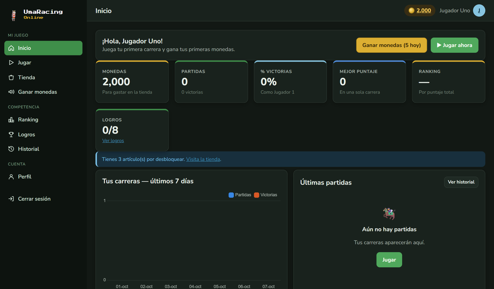
2763a2f).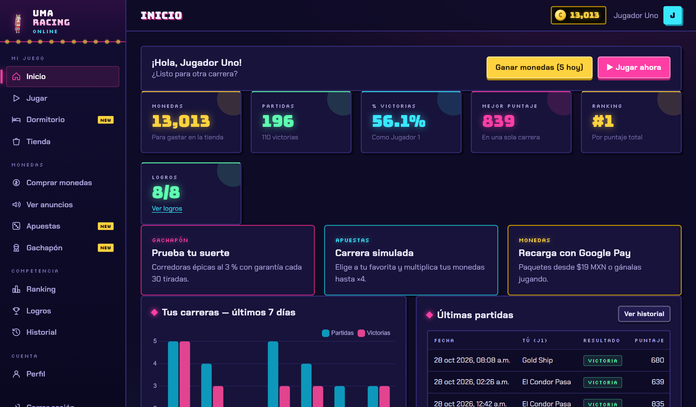
| Aspecto | Versión inicial | Versión final | Razón |
|---|---|---|---|
| Identidad visual | Oscuro neutro con verde; tipografía de sistema. | “Arcade nocturno”: violeta con neón; Bungee, Chakra Petch y Silkscreen. | Coherencia con un juego arcade y una marca más reconocible. |
| Menú | 3 grupos y una sola opción para ganar monedas. | 4 grupos; el grupo “Monedas” reúne la compra, los anuncios, las apuestas y el gachapón. | Se agregaron 4 módulos; agruparlos evita un menú plano y largo. |
| Dashboard | Indicadores y una invitación a la tienda. | Indicadores más tarjetas de acceso a gachapón, apuestas y Google Pay. | Dar a conocer los nuevos módulos desde la pantalla de inicio. |
| Retroalimentación | Transiciones básicas. | Animaciones con anime.js (contadores, entrada de tarjetas, carrera simulada), desactivables. | Hacer evidente el cambio de saldo y el resultado de una acción. |
| Interfaz del juego | Solo el marco del juego de carreras. | Pestañas Carreras y Dormitorio que comparten el marco; botón “Dormitorio [TAB]” dentro del juego. | Integrar el dormitorio como parte del juego y no como una página suelta. |
| Estructura | Se conservó la estructura del boceto: menú lateral, barra con saldo, tarjetas, gráfica y tabla. | La distribución ya funcionaba; solo cambió la capa visual. | |
La base uma_racing (MariaDB, motor InnoDB, utf8mb4) tiene 26 tablas y una vista. Se crea desde cero con database/schema.sql. Por legibilidad, el modelo entidad-relación se presenta en cuatro diagramas por dominio; el diagrama completo de relaciones está en el Anexo A y el diccionario de datos completo, en el Anexo B. Notación: ||--o{ uno a muchos, |o--o{ relación opcional (FK que admite NULL) y ||--o| uno a uno.
erDiagram
roles {
tinyint id PK
varchar nombre UK
varchar descripcion
}
usuarios {
int id PK
tinyint rol_id FK
varchar username UK
varchar email UK
varchar password_hash
tinyint activo
datetime ultimo_acceso
datetime creado_en
datetime actualizado_en
datetime eliminado_en
}
roles ||--o{ usuarios : "rol_id"
sesiones {
int id PK
int usuario_id FK
char jti UK
varchar ip
varchar user_agent
datetime creada_en
datetime expira_en
datetime revocada_en
}
usuarios ||--o{ sesiones : "usuario_id"
perfiles {
int usuario_id PK,FK
varchar nombre_mostrar
varchar biografia
int monedas
int personaje_favorito_id FK
int escenario_equipado_id FK
smallint tiradas_sin_epica
}
usuarios ||--o| perfiles : "usuario_id"
items |o--o{ perfiles : "personaje_favorito_id"
items |o--o{ perfiles : "escenario_equipado_id"
logros {
int id PK
varchar codigo UK
varchar nombre
varchar descripcion
enum condicion
int valor_objetivo
int recompensa_monedas
tinyint activo
datetime creado_en
}
usuario_logros {
int usuario_id PK,FK
int logro_id PK,FK
datetime obtenido_en
}
usuarios ||--o{ usuario_logros : "usuario_id"
logros ||--o{ usuario_logros : "logro_id"
bitacora {
bigint id PK
int usuario_id FK
varchar accion
varchar entidad
varchar entidad_id
text estado_anterior
text estado_nuevo
varchar ip
datetime creado_en
}
usuarios |o--o{ bitacora : "usuario_id"
erDiagram
tipos_item {
tinyint id PK
varchar codigo UK
varchar nombre
}
items {
int id PK
tinyint tipo_id FK
varchar codigo UK
varchar nombre
varchar descripcion
int precio
tinyint es_gratuito
tinyint solo_gacha
varchar imagen_url
tinyint activo
datetime creado_en
datetime actualizado_en
}
tipos_item ||--o{ items : "tipo_id"
compras {
int id PK
varchar folio UK
int usuario_id FK
int item_id FK
int precio_pagado
enum estado
datetime creada_en
datetime reembolsada_en
int reembolsada_por FK
varchar motivo_reembolso
}
usuarios ||--o{ compras : "usuario_id"
items ||--o{ compras : "item_id"
usuarios |o--o{ compras : "reembolsada_por"
inventario_usuario {
int id PK
int usuario_id FK,UK
int item_id FK,UK
int compra_id FK
enum origen
datetime adquirido_en
}
usuarios ||--o{ inventario_usuario : "usuario_id"
items ||--o{ inventario_usuario : "item_id"
compras |o--o{ inventario_usuario : "compra_id"
movimientos_monedas {
bigint id PK
int usuario_id FK
enum tipo
int monto
int saldo_anterior
int saldo_nuevo
varchar referencia
varchar descripcion
datetime creado_en
}
usuarios ||--o{ movimientos_monedas : "usuario_id"
anuncios {
int id PK
varchar titulo
varchar anunciante
varchar descripcion
char color
smallint duracion_seg
smallint recompensa_monedas
tinyint activo
datetime creado_en
datetime actualizado_en
}
visualizaciones_anuncio {
int id PK
int usuario_id FK
int anuncio_id FK
char token UK
enum estado
datetime iniciada_en
datetime completada_en
int monedas_otorgadas
}
usuarios ||--o{ visualizaciones_anuncio : "usuario_id"
anuncios ||--o{ visualizaciones_anuncio : "anuncio_id"
paquetes_monedas {
int id PK
varchar nombre
int monedas
int bonus
decimal precio_mxn
tinyint destacado
tinyint activo
datetime creado_en
datetime actualizado_en
}
ordenes_pago {
int id PK
varchar folio UK
int usuario_id FK
int paquete_id FK
int monedas
decimal monto
char moneda
varchar proveedor
enum entorno
enum estado
char referencia_pago
varchar red_tarjeta
datetime creada_en
datetime expira_en
datetime pagada_en
}
usuarios ||--o{ ordenes_pago : "usuario_id"
paquetes_monedas ||--o{ ordenes_pago : "paquete_id"
erDiagram
partidas {
int id PK
int usuario_id FK
char token UK
int personaje_j1_id FK
int personaje_j2_id FK
int escenario_id FK
enum estado
enum ganador
int duracion_ms
int pulsaciones_j1
int pulsaciones_j2
int puntaje
int monedas_ganadas
varchar motivo_invalida
datetime iniciada_en
datetime finalizada_en
}
usuarios ||--o{ partidas : "usuario_id"
items ||--o{ partidas : "personaje_j1_id"
items ||--o{ partidas : "personaje_j2_id"
items ||--o{ partidas : "escenario_id"
sesiones_juego {
int id PK
int usuario_id FK
char token UK
enum estado
datetime iniciada_en
datetime ultimo_latido
int segundos_activos
int segundos_sin_pagar
int monedas_otorgadas
}
usuarios ||--o{ sesiones_juego : "usuario_id"
atributos_carrera {
int item_id PK,FK
tinyint velocidad
tinyint resistencia
tinyint arranque
}
items ||--o| atributos_carrera : "item_id"
apuestas {
int id PK
varchar folio UK
int usuario_id FK
enum tipo
int monto
int item_id FK
int objetivo_ms
decimal momio
enum estado
int pago
int partida_id FK
int ganador_id FK
varchar resultado
datetime creada_en
datetime resuelta_en
}
usuarios ||--o{ apuestas : "usuario_id"
items |o--o{ apuestas : "item_id"
items |o--o{ apuestas : "ganador_id"
partidas |o--o{ apuestas : "partida_id"
gacha_premios {
int id PK
varchar nombre
enum rareza
enum tipo
int item_id FK
int monedas
smallint peso
int monedas_repetido
tinyint activo
}
items |o--o{ gacha_premios : "item_id"
gacha_tiradas {
int id PK
varchar folio UK
int usuario_id FK
tinyint cantidad
int costo
datetime creada_en
}
usuarios ||--o{ gacha_tiradas : "usuario_id"
gacha_resultados {
int id PK
int tirada_id FK
int premio_id FK
enum rareza
tinyint repetido
tinyint por_garantia
int monedas_otorgadas
}
gacha_tiradas ||--o{ gacha_resultados : "tirada_id"
gacha_premios ||--o{ gacha_resultados : "premio_id"
erDiagram
dormitorios {
int usuario_id PK,FK
varchar nombre
datetime creado_en
datetime actualizado_en
}
usuarios ||--o| dormitorios : "usuario_id"
dormitorio_muebles {
int id PK
int usuario_id FK
int item_id FK
int compra_id FK,UK
enum origen
tinyint x
tinyint z
tinyint rot
datetime adquirido_en
}
usuarios ||--o{ dormitorio_muebles : "usuario_id"
items ||--o{ dormitorio_muebles : "item_id"
compras |o--o{ dormitorio_muebles : "compra_id"
atributos_mueble {
int item_id PK,FK
tinyint ancho
tinyint fondo
tinyint pisable
}
items ||--o| atributos_mueble : "item_id"
| Entidad | Descripción y justificación | Cardinalidades clave |
|---|---|---|
usuarios / roles | Credenciales (hash bcrypt), estado y baja lógica (activo, eliminado_en). El rol está en un catálogo aparte para no repetir su nombre ni su descripción. | roles 1:N usuarios |
perfiles | Datos públicos y monedero. Se separa de usuarios para no mezclar credenciales con datos de juego. | usuarios 1:1 perfiles (PK = FK) |
sesiones | Un registro por token (jti), lo que permite cerrar sesión de verdad (revocación) y auditar accesos. | usuarios 1:N sesiones |
items / tipos_item | Productos de la tienda de cuatro tipos: corredora, escenario, chibi y mueble. El codigo es el que usa el juego o el dormitorio para cargar sus recursos; solo_gacha marca los que no se venden. | tipos_item 1:N items |
compras + inventario_usuario | La compra guarda el precio pagado en ese momento (histórico) y su estado; el inventario indica qué posee el usuario y su origen (compra, regalo, logro o gacha). | usuarios N:M items mediante inventario (UNIQUE usuario+item) |
movimientos_monedas | Libro mayor: cada cambio de saldo con su tipo, monto, saldo anterior y nuevo, y referencia (folio). | usuarios 1:N movimientos |
partidas | Cada carrera con sus personajes J1 y J2, escenario, estado (en curso, finalizada o inválida), duración, pulsaciones, puntaje y monedas. | usuarios 1:N partidas; items 1:N partidas (3 FK) |
logros + usuario_logros | Catálogo configurable y su relación con los usuarios (PK compuesta: un logro se obtiene una sola vez). | usuarios N:M logros |
anuncios + visualizaciones_anuncio | Anuncio simulado y cada visualización con su token y sus marcas de tiempo en milisegundos, para que el servidor mida la duración. | anuncios 1:N visualizaciones |
paquetes_monedas + ordenes_pago | Paquetes a la venta y órdenes cuyo precio y monedas se copian del paquete al crearlas. | paquetes 1:N órdenes |
apuestas | Apuestas de carrera (corredora elegida y ganadora) o de tiempo (objetivo y partida asociada). | usuarios 1:N; items 1:N (2 FK); partidas 1:N |
gacha_premios, gacha_tiradas, gacha_resultados | Premios con rareza y peso, la tirada (1 o 10, con costo y folio) y el resultado de cada premio (repetido, por garantía). | tirada 1:N resultados; premio 1:N resultados |
dormitorios | Un dormitorio por jugador, creado la primera vez que lo abre. | usuarios 1:1 dormitorios (PK = FK) |
dormitorio_muebles | Cada pieza de mueble es una fila con su origen (inicial, compra o regalo) y su posición x, z, rot; sin posición, la pieza está guardada. | usuarios 1:N piezas; items 1:N piezas; compras 1:0..1 pieza |
atributos_mueble | Huella de cada mueble en celdas (ancho y fondo) y si es pisable, como una alfombra. El servidor la usa para validar el acomodo. | items 1:1 atributos_mueble (PK = FK) |
bitacora | Historial de operaciones con estado anterior y nuevo. usuario_id admite NULL para eventos del sistema. | usuarios 1:N bitácora |
usuario_logros), el único atributo no clave (obtenido_en) depende de la clave completa. Las demás tablas usan una PK simple.roles, tipos_item); los datos del artículo no se repiten en compras ni partidas, que solo guardan la FK.compras.precio_pagado y ordenes_pago.monto/monedas son históricos: el precio del catálogo puede cambiar, pero lo que se pagó no. (2) perfiles.monedas es el saldo actual, consistente con el libro mayor gracias a la transacción y al CHECK saldo_nuevo = saldo_anterior + monto; evita sumar todos los movimientos en cada petición. (3) gacha_resultados.rareza conserva la rareza obtenida aunque el administrador cambie el premio después.inventario_usuario tiene UNIQUE (usuario_id, item_id) porque una corredora o una chibi se posee una sola vez; los muebles se pueden repetir y cada pieza tiene su propia posición, así que se guardan en dormitorio_muebles. La huella está en atributos_mueble (1:1 con items) para no dejar columnas vacías en los demás tipos de artículo.v_ranking: agrega partidas, victorias, puntaje total, mejor puntaje y mejor tiempo por usuario activo. Se calcula al consultarla y no duplica datos.activo + eliminado_en), artículos, anuncios, logros, paquetes y premios (activo). Los registros con historial nunca se borran físicamente.username, email, folios (compras, órdenes, apuestas y tiradas), tokens (sesiones, partidas, visualizaciones y sesiones de juego), códigos de artículo y logro, y el par (usuario_id, item_id) del inventario.INT UNSIGNED para monedas (impide negativos), DECIMAL(8,2) para pesos mexicanos, DATETIME(3) para medir partidas y anuncios en milisegundos, y ENUM para estados cerrados.(usuario_id, fecha) para historiales y reportes, índices por fecha para los rangos y por estado en partidas.database/seed.sql carga el catálogo (2 roles, 31 artículos —6 del juego, 5 chibis y 20 muebles con su huella—, 5 anuncios, 8 logros, 4 paquetes, 8 premios y atributos de carrera) y tres cuentas en cero: admin, jugador1 y jugador2. database/seed_demo.sql agrega 60 días de actividad de 15 jugadores (1 129 partidas, además de compras de chibis y muebles) para que los reportes y las gráficas muestren datos reales de la BD. Ambos se regeneran con python database/generar_seed.py [--demo], y python database/reiniciar_bd.py [--demo] deja la base en su estado inicial usando la conexión del .env.
Fragmento real de schema.sql (libro mayor de monedas):
CREATE TABLE movimientos_monedas (
id BIGINT UNSIGNED NOT NULL AUTO_INCREMENT,
usuario_id INT UNSIGNED NOT NULL,
tipo ENUM('registro', 'compra', 'reembolso', 'anuncio', 'partida', 'logro', 'ajuste',
'compra_monedas', 'tiempo_juego', 'apuesta', 'premio_apuesta', 'gacha', 'premio_gacha') NOT NULL,
monto INT NOT NULL,
saldo_anterior INT UNSIGNED NOT NULL,
saldo_nuevo INT UNSIGNED NOT NULL,
referencia VARCHAR(40) NULL,
descripcion VARCHAR(255) NOT NULL,
creado_en DATETIME NOT NULL DEFAULT CURRENT_TIMESTAMP,
PRIMARY KEY (id),
CONSTRAINT fk_movimientos_usuario FOREIGN KEY (usuario_id) REFERENCES usuarios (id),
CONSTRAINT ck_movimientos_monto CHECK (monto <> 0),
CONSTRAINT ck_movimientos_saldo CHECK (saldo_nuevo = saldo_anterior + monto),
INDEX ix_movimientos_usuario (usuario_id, creado_en),
INDEX ix_movimientos_fecha (creado_en)
) ENGINE=InnoDB;
La API expone 80 operaciones bajo /api, agrupadas en 15 routers. La documentación interactiva OpenAPI (Swagger) está en /docs (Figura ?, Anexo D), con los esquemas de entrada y salida de cada operación. La tabla completa, generada desde el código, está en el Anexo C. Estos son los endpoints principales:
| Método | Endpoint | Función | Entrada | Respuesta | Rol |
|---|---|---|---|---|---|
| POST | /api/auth/registro | Crear cuenta | JSON username, email, password | 201 + usuario | Público |
| POST | /api/auth/login | Autenticar | JSON usuario, password | 200 token, expira_en, usuario | Público |
| POST | /api/auth/logout | Revocar token | — | 200 | Autenticado |
| GET | /api/items | Listar catálogo | q, tipo, seccion, gratuito, poseido, precio, orden, page, limit | 200 listado paginado | Autenticado |
| POST | /api/items | Crear artículo | JSON artículo | 201 + artículo | Administrador |
| PUT | /api/items/{id} | Actualizar completo | JSON artículo | 200 + artículo | Administrador |
| DELETE | /api/items/{id} | Baja lógica | — | 200 | Administrador |
| POST | /api/compras | Comprar (transacción) | JSON item_id | 201 folio, saldo, logros (y pieza_id en muebles) | Jugador |
| POST | /api/compras/{folio}/reembolso | Reembolsar | JSON motivo | 200 compra reembolsada | Administrador |
| POST | /api/partidas | Iniciar partida | JSON personaje_j1, personaje_j2 | 201 token | Jugador |
| POST | /api/partidas/{token}/finalizar | Registrar resultado | JSON ganador, duracion_ms, pulsaciones | 200 puntaje, monedas, logros | Jugador |
| POST | /api/anuncios/{id}/ver | Iniciar anuncio | — | 201 token, duración | Jugador |
| POST | /api/anuncios/visualizaciones/{token}/completar | Reclamar recompensa | — | 200 monedas, saldo | Jugador |
| GET | /api/ranking | Ranking | periodo, criterio, limit | 200 posiciones | Autenticado |
| POST | /api/pagos/ordenes/{folio}/confirmar | Confirmar Google Pay | JSON PaymentData | 200 orden pagada, saldo | Jugador |
| POST | /api/apuestas/carrera | Apostar a carrera | JSON item_id, monto | 201 carrera, ganadora, pago | Jugador |
| POST | /api/gacha/tiradas | Tirar gachapón | JSON cantidad (1 o 10) | 201 resultados, saldo | Jugador |
| GET | /api/dormitorio | Estado del dormitorio | — | 200 monedas, catálogo, chibis, piezas | Jugador |
| PUT | /api/dormitorio/acomodo | Guardar acomodo | JSON piezas [id, x, z, rot] | 200 piezas colocadas | Jugador |
| PATCH | /api/usuarios/{id}/estado | Activar o desactivar | JSON activo | 200 usuario | Administrador |
| GET | /api/reportes/partidas | Reporte por fechas | desde, hasta | 200 series y tablas | Administrador |
| GET | /api/bitacora | Historial de operaciones | q, accion, entidad, desde, hasta, orden, page | 200 listado paginado | Administrador |
Los listados devuelven el formato estándar que piden los requerimientos (respuesta real de GET /api/items?orden=-precio&limit=2&page=1, recortada):
{"pagina": 1, "limite": 2, "total": 6, "totalPaginas": 3,
"datos": [{"id": 4, "tipo": "personaje", "codigo": "junglepocket", "nombre": "Jungle Pocket",
"precio": 450, "es_gratuito": false, "activo": true, "poseido": true, "ventas": 12}, ...]}
El parámetro orden acepta campo (ascendente) o -campo (descendente), solo de una lista blanca por recurso. Cualquier otro valor responde 422 sin llegar al SQL.
Todos los errores tienen el mismo formato y un mensaje comprensible; nunca se exponen SQL, trazas ni credenciales (backend/app/errors.py):
{"error": {"codigo": "validacion", "mensaje": "Revisa los datos enviados.",
"detalles": {"email": "Escribe un correo válido.", "password": "La contraseña debe incluir letras y números."}}}
| Código | Significado | Cuándo lo devuelve la API (ejemplos reales) |
|---|---|---|
| 200 | Operación correcta | Consultas, actualizaciones, login, reembolso, confirmación de pago. |
| 201 | Recurso creado | Registro, compra, partida iniciada, orden de pago, apuesta, tirada, altas de CRUD. |
| 400 | Solicitud incorrecta | Petición mal formada que no llega a validarse. |
| 401 | No autenticado | Sin token, token inválido o expirado, sesión revocada, credenciales incorrectas. |
| 403 | Sin permisos | Jugador en una ruta de administrador; administrador intentando comprar o jugar; corredora bloqueada; cuenta desactivada. |
| 404 | No encontrado | Artículo, compra, partida o usuario inexistente (o ajeno: no se revela su existencia). |
| 409 | Conflicto | Saldo insuficiente, registro duplicado, compra ya reembolsada, orden ya pagada o expirada, reto pendiente. |
| 422 | Error de validación | Campos vacíos o inválidos, campos no permitidos, rango de fechas invertido, resultado de partida imposible, anuncio incompleto. |
| 429 | Límite alcanzado | Límite diario de anuncios, juego responsable en apuestas, latido demasiado pronto. |
| 500 / 503 / 501 | Error interno / BD no disponible / no implementado | Error no controlado (“No fue posible completar la operación.”); MariaDB caída; Google Pay en PRODUCTION. |
Cada cuerpo JSON se valida con un modelo Pydantic (schemas.py) que define tipos, longitudes, rangos y patrones. Además, los modelos usan extra = "forbid": si el cliente envía un campo no esperado, como "precio": 1 en una compra, la petición se rechaza con 422. Las rutas protegidas declaran usuario_actual (autenticado) o requiere_rol("administrador" | "jugador") como dependencia, de modo que la verificación ocurre en el servidor antes de ejecutar cualquier lógica, sin importar si el usuario conoce la URL.
%%{init: {"themeVariables": {"fontSize": "24px"}, "er": {"minEntityWidth": 230}}}%%
erDiagram
direction LR
roles ||--o{ usuarios : "rol_id"
usuarios ||--o{ sesiones : "usuario_id"
tipos_item ||--o{ items : "tipo_id"
usuarios ||--o| perfiles : "usuario_id"
items |o--o{ perfiles : "personaje_favorito_id"
items |o--o{ perfiles : "escenario_equipado_id"
usuarios ||--o{ compras : "usuario_id"
items ||--o{ compras : "item_id"
usuarios |o--o{ compras : "reembolsada_por"
usuarios ||--o{ inventario_usuario : "usuario_id"
items ||--o{ inventario_usuario : "item_id"
compras |o--o{ inventario_usuario : "compra_id"
usuarios ||--o{ movimientos_monedas : "usuario_id"
usuarios ||--o{ visualizaciones_anuncio : "usuario_id"
anuncios ||--o{ visualizaciones_anuncio : "anuncio_id"
usuarios ||--o{ partidas : "usuario_id"
items ||--o{ partidas : "personaje_j1_id"
items ||--o{ partidas : "personaje_j2_id"
items ||--o{ partidas : "escenario_id"
usuarios ||--o{ usuario_logros : "usuario_id"
logros ||--o{ usuario_logros : "logro_id"
usuarios |o--o{ bitacora : "usuario_id"
usuarios ||--o{ ordenes_pago : "usuario_id"
paquetes_monedas ||--o{ ordenes_pago : "paquete_id"
usuarios ||--o{ sesiones_juego : "usuario_id"
items ||--o| atributos_carrera : "item_id"
usuarios ||--o{ apuestas : "usuario_id"
items |o--o{ apuestas : "item_id"
items |o--o{ apuestas : "ganador_id"
partidas |o--o{ apuestas : "partida_id"
items |o--o{ gacha_premios : "item_id"
usuarios ||--o{ gacha_tiradas : "usuario_id"
gacha_tiradas ||--o{ gacha_resultados : "tirada_id"
gacha_premios ||--o{ gacha_resultados : "premio_id"
usuarios ||--o| dormitorios : "usuario_id"
usuarios ||--o{ dormitorio_muebles : "usuario_id"
items ||--o{ dormitorio_muebles : "item_id"
compras |o--o{ dormitorio_muebles : "compra_id"
items ||--o| atributos_mueble : "item_id"
Generado automáticamente desde database/schema.sql. PK = clave primaria, FK = clave foránea, UQ = valor único.
roles — Roles| Campo | Tipo | Nulo | Clave | Default / referencia |
|---|---|---|---|---|
id | TINYINT UNSIGNED | No | PK | AUTO_INCREMENT |
nombre | VARCHAR(30) | No | UQ | |
descripcion | VARCHAR(150) | No |
usuarios — UsuariosCredenciales y estado de la cuenta.
| Campo | Tipo | Nulo | Clave | Default / referencia |
|---|---|---|---|---|
id | INT UNSIGNED | No | PK | AUTO_INCREMENT |
rol_id | TINYINT UNSIGNED | No | FK | → roles.id |
username | VARCHAR(30) | No | UQ | |
email | VARCHAR(120) | No | UQ | |
password_hash | VARCHAR(255) | No | ||
activo | TINYINT(1) | No | DEFAULT 1 | |
ultimo_acceso | DATETIME | Sí | ||
creado_en | DATETIME | No | DEFAULT CURRENT_TIMESTAMP | |
actualizado_en | DATETIME | No | DEFAULT CURRENT_TIMESTAMP ON UPDATE CURRENT_TIMESTAMP | |
eliminado_en | DATETIME | Sí |
CHECK: (CHAR_LENGTH(username) BETWEEN 3 AND 30); (activo IN (0, 1))
Índices: ix_usuarios_creado(creado_en)
sesiones — SesionesPermite cerrar sesión revocando el token en el servidor.
| Campo | Tipo | Nulo | Clave | Default / referencia |
|---|---|---|---|---|
id | INT UNSIGNED | No | PK | AUTO_INCREMENT |
usuario_id | INT UNSIGNED | No | FK | → usuarios.id |
jti | CHAR(36) | No | UQ | |
ip | VARCHAR(45) | Sí | ||
user_agent | VARCHAR(255) | Sí | ||
creada_en | DATETIME | No | DEFAULT CURRENT_TIMESTAMP | |
expira_en | DATETIME | No | ||
revocada_en | DATETIME | Sí |
Índices: ix_sesiones_usuario(usuario_id,creada_en)
tipos_item — Tipos de itemCatálogo: personaje, escenario, chibi y mueble del dormitorio.
| Campo | Tipo | Nulo | Clave | Default / referencia |
|---|---|---|---|---|
id | TINYINT UNSIGNED | No | PK | AUTO_INCREMENT |
codigo | VARCHAR(20) | No | UQ | |
nombre | VARCHAR(40) | No |
items — ItemsProductos de la tienda: personajes, escenarios, chibis y muebles.
| Campo | Tipo | Nulo | Clave | Default / referencia |
|---|---|---|---|---|
id | INT UNSIGNED | No | PK | AUTO_INCREMENT |
tipo_id | TINYINT UNSIGNED | No | FK | → tipos_item.id |
codigo | VARCHAR(40) | No | UQ | |
nombre | VARCHAR(60) | No | ||
descripcion | VARCHAR(255) | No | DEFAULT '' | |
precio | INT UNSIGNED | No | DEFAULT 0 | |
es_gratuito | TINYINT(1) | No | DEFAULT 0 | |
solo_gacha | TINYINT(1) | No | DEFAULT 0 | |
imagen_url | VARCHAR(255) | Sí | ||
activo | TINYINT(1) | No | DEFAULT 1 | |
creado_en | DATETIME | No | DEFAULT CURRENT_TIMESTAMP | |
actualizado_en | DATETIME | No | DEFAULT CURRENT_TIMESTAMP ON UPDATE CURRENT_TIMESTAMP |
CHECK: (precio <= 100000); ((es_gratuito = 1 AND solo_gacha = 0 AND precio = 0) OR (es_gratuito = 0 AND solo_gacha = 0 AND precio > 0) OR (es_gratuito = 0 AND solo_gacha = 1 AND precio = 0))
Índices: ix_items_tipo(tipo_id,activo)
perfiles — PerfilesDatos públicos del jugador + monedero.
| Campo | Tipo | Nulo | Clave | Default / referencia |
|---|---|---|---|---|
usuario_id | INT UNSIGNED | No | PK, FK | → usuarios.id |
nombre_mostrar | VARCHAR(50) | No | ||
biografia | VARCHAR(255) | No | DEFAULT '' | |
monedas | INT UNSIGNED | No | DEFAULT 0 | |
personaje_favorito_id | INT UNSIGNED | Sí | FK | → items.id |
escenario_equipado_id | INT UNSIGNED | Sí | FK | → items.id |
tiradas_sin_epica | SMALLINT UNSIGNED | No | DEFAULT 0 |
compras — ComprasVenta de un item con folio único.
| Campo | Tipo | Nulo | Clave | Default / referencia |
|---|---|---|---|---|
id | INT UNSIGNED | No | PK | AUTO_INCREMENT |
folio | VARCHAR(24) | No | UQ | |
usuario_id | INT UNSIGNED | No | FK | → usuarios.id |
item_id | INT UNSIGNED | No | FK | → items.id |
precio_pagado | INT UNSIGNED | No | ||
estado | ENUM('completada', 'reembolsada') | No | DEFAULT 'completada' | |
creada_en | DATETIME | No | DEFAULT CURRENT_TIMESTAMP | |
reembolsada_en | DATETIME | Sí | ||
reembolsada_por | INT UNSIGNED | Sí | FK | → usuarios.id |
motivo_reembolso | VARCHAR(255) | Sí |
CHECK: (precio_pagado > 0)
Índices: ix_compras_fecha(creada_en), ix_compras_usuario(usuario_id,creada_en)
inventario_usuario — InventarioItems que posee cada usuario; los gratuitos no se guardan.
| Campo | Tipo | Nulo | Clave | Default / referencia |
|---|---|---|---|---|
id | INT UNSIGNED | No | PK | AUTO_INCREMENT |
usuario_id | INT UNSIGNED | No | FK, UQ | → usuarios.id |
item_id | INT UNSIGNED | No | FK, UQ | → items.id |
compra_id | INT UNSIGNED | Sí | FK | → compras.id |
origen | ENUM('compra', 'regalo', 'logro', 'gacha') | No | DEFAULT 'compra' | |
adquirido_en | DATETIME | No | DEFAULT CURRENT_TIMESTAMP |
movimientos_monedas — Movimientos de monedasLibro mayor del monedero virtual.
| Campo | Tipo | Nulo | Clave | Default / referencia |
|---|---|---|---|---|
id | BIGINT UNSIGNED | No | PK | AUTO_INCREMENT |
usuario_id | INT UNSIGNED | No | FK | → usuarios.id |
tipo | ENUM('registro', 'compra', 'reembolso', 'anuncio', 'partida', 'logro', 'ajuste', 'compra_monedas', 'tiempo_juego', 'apuesta', 'premio_apuesta', 'gacha', 'premio_gacha') | No | ||
monto | INT | No | ||
saldo_anterior | INT UNSIGNED | No | ||
saldo_nuevo | INT UNSIGNED | No | ||
referencia | VARCHAR(40) | Sí | ||
descripcion | VARCHAR(255) | No | ||
creado_en | DATETIME | No | DEFAULT CURRENT_TIMESTAMP |
CHECK: (monto <> 0); (saldo_nuevo = saldo_anterior + monto)
Índices: ix_movimientos_usuario(usuario_id,creado_en), ix_movimientos_fecha(creado_en)
anuncios — AnunciosPublicidad simulada.
| Campo | Tipo | Nulo | Clave | Default / referencia |
|---|---|---|---|---|
id | INT UNSIGNED | No | PK | AUTO_INCREMENT |
titulo | VARCHAR(80) | No | ||
anunciante | VARCHAR(80) | No | ||
descripcion | VARCHAR(255) | No | DEFAULT '' | |
color | CHAR(7) | No | DEFAULT '#3b82f6' | |
duracion_seg | SMALLINT UNSIGNED | No | ||
recompensa_monedas | SMALLINT UNSIGNED | No | ||
activo | TINYINT(1) | No | DEFAULT 1 | |
creado_en | DATETIME | No | DEFAULT CURRENT_TIMESTAMP | |
actualizado_en | DATETIME | No | DEFAULT CURRENT_TIMESTAMP ON UPDATE CURRENT_TIMESTAMP |
CHECK: (duracion_seg BETWEEN 5 AND 120); (recompensa_monedas BETWEEN 1 AND 500)
visualizaciones_anuncio — Visualizaciones de anuncioEl servidor valida la recompensa.
| Campo | Tipo | Nulo | Clave | Default / referencia |
|---|---|---|---|---|
id | INT UNSIGNED | No | PK | AUTO_INCREMENT |
usuario_id | INT UNSIGNED | No | FK | → usuarios.id |
anuncio_id | INT UNSIGNED | No | FK | → anuncios.id |
token | CHAR(36) | No | UQ | |
estado | ENUM('iniciada', 'completada', 'rechazada') | No | DEFAULT 'iniciada' | |
iniciada_en | DATETIME(3) | No | DEFAULT CURRENT_TIMESTAMP(3) | |
completada_en | DATETIME(3) | Sí | ||
monedas_otorgadas | INT UNSIGNED | No | DEFAULT 0 |
Índices: ix_visualizaciones_usuario(usuario_id,iniciada_en), ix_visualizaciones_fecha(iniciada_en)
partidas — PartidasCarreras registradas por el juego.
| Campo | Tipo | Nulo | Clave | Default / referencia |
|---|---|---|---|---|
id | INT UNSIGNED | No | PK | AUTO_INCREMENT |
usuario_id | INT UNSIGNED | No | FK | → usuarios.id |
token | CHAR(36) | No | UQ | |
personaje_j1_id | INT UNSIGNED | No | FK | → items.id |
personaje_j2_id | INT UNSIGNED | No | FK | → items.id |
escenario_id | INT UNSIGNED | No | FK | → items.id |
estado | ENUM('en_curso', 'finalizada', 'invalida') | No | DEFAULT 'en_curso' | |
ganador | ENUM('J1', 'J2') | Sí | ||
duracion_ms | INT UNSIGNED | Sí | ||
pulsaciones_j1 | INT UNSIGNED | Sí | ||
pulsaciones_j2 | INT UNSIGNED | Sí | ||
puntaje | INT UNSIGNED | No | DEFAULT 0 | |
monedas_ganadas | INT UNSIGNED | No | DEFAULT 0 | |
motivo_invalida | VARCHAR(255) | Sí | ||
iniciada_en | DATETIME(3) | No | DEFAULT CURRENT_TIMESTAMP(3) | |
finalizada_en | DATETIME(3) | Sí |
Índices: ix_partidas_usuario(usuario_id,iniciada_en), ix_partidas_fecha(iniciada_en), ix_partidas_estado(estado)
logros — LogrosCatálogo configurable por el administrador.
| Campo | Tipo | Nulo | Clave | Default / referencia |
|---|---|---|---|---|
id | INT UNSIGNED | No | PK | AUTO_INCREMENT |
codigo | VARCHAR(40) | No | UQ | |
nombre | VARCHAR(60) | No | ||
descripcion | VARCHAR(255) | No | ||
condicion | ENUM('partidas_jugadas', 'victorias', 'anuncios_vistos', 'compras', 'puntaje_partida') | No | ||
valor_objetivo | INT UNSIGNED | No | ||
recompensa_monedas | INT UNSIGNED | No | DEFAULT 0 | |
activo | TINYINT(1) | No | DEFAULT 1 | |
creado_en | DATETIME | No | DEFAULT CURRENT_TIMESTAMP |
CHECK: (valor_objetivo > 0); (recompensa_monedas <= 5000)
usuario_logros — Logros obtenidos por usuario| Campo | Tipo | Nulo | Clave | Default / referencia |
|---|---|---|---|---|
usuario_id | INT UNSIGNED | No | PK, FK | → usuarios.id |
logro_id | INT UNSIGNED | No | PK, FK | → logros.id |
obtenido_en | DATETIME | No | DEFAULT CURRENT_TIMESTAMP |
Índices: ix_usuario_logros_fecha(obtenido_en)
bitacora — BitácoraHistorial de operaciones importantes.
| Campo | Tipo | Nulo | Clave | Default / referencia |
|---|---|---|---|---|
id | BIGINT UNSIGNED | No | PK | AUTO_INCREMENT |
usuario_id | INT UNSIGNED | Sí | FK | → usuarios.id |
accion | VARCHAR(40) | No | ||
entidad | VARCHAR(40) | No | ||
entidad_id | VARCHAR(40) | Sí | ||
estado_anterior | TEXT | Sí | ||
estado_nuevo | TEXT | Sí | ||
ip | VARCHAR(45) | Sí | ||
creado_en | DATETIME | No | DEFAULT CURRENT_TIMESTAMP |
Índices: ix_bitacora_fecha(creado_en), ix_bitacora_entidad(entidad,entidad_id)
paquetes_monedas — Paquetes de monedasSe compran con google pay.
| Campo | Tipo | Nulo | Clave | Default / referencia |
|---|---|---|---|---|
id | INT UNSIGNED | No | PK | AUTO_INCREMENT |
nombre | VARCHAR(60) | No | ||
monedas | INT UNSIGNED | No | ||
bonus | INT UNSIGNED | No | DEFAULT 0 | |
precio_mxn | DECIMAL(8, 2) | No | ||
destacado | TINYINT(1) | No | DEFAULT 0 | |
activo | TINYINT(1) | No | DEFAULT 1 | |
creado_en | DATETIME | No | DEFAULT CURRENT_TIMESTAMP | |
actualizado_en | DATETIME | No | DEFAULT CURRENT_TIMESTAMP ON UPDATE CURRENT_TIMESTAMP |
CHECK: (monedas BETWEEN 1 AND 1000000); (precio_mxn > 0 AND precio_mxn <= 10000)
ordenes_pago — Órdenes de pagoEl servidor fija el precio; el cliente solo confirma.
| Campo | Tipo | Nulo | Clave | Default / referencia |
|---|---|---|---|---|
id | INT UNSIGNED | No | PK | AUTO_INCREMENT |
folio | VARCHAR(24) | No | UQ | |
usuario_id | INT UNSIGNED | No | FK | → usuarios.id |
paquete_id | INT UNSIGNED | No | FK | → paquetes_monedas.id |
monedas | INT UNSIGNED | No | ||
monto | DECIMAL(8, 2) | No | ||
moneda | CHAR(3) | No | DEFAULT 'MXN' | |
proveedor | VARCHAR(20) | No | DEFAULT 'google_pay' | |
entorno | ENUM('TEST', 'PRODUCTION') | No | DEFAULT 'TEST' | |
estado | ENUM('pendiente', 'pagada', 'cancelada', 'expirada') | No | DEFAULT 'pendiente' | |
referencia_pago | CHAR(64) | Sí | ||
red_tarjeta | VARCHAR(20) | Sí | ||
creada_en | DATETIME | No | DEFAULT CURRENT_TIMESTAMP | |
expira_en | DATETIME | No | ||
pagada_en | DATETIME | Sí |
Índices: ix_ordenes_usuario(usuario_id,creada_en), ix_ordenes_fecha(estado,pagada_en)
sesiones_juego — Sesiones de juegoTiempo de juego activo, medido por latidos.
| Campo | Tipo | Nulo | Clave | Default / referencia |
|---|---|---|---|---|
id | INT UNSIGNED | No | PK | AUTO_INCREMENT |
usuario_id | INT UNSIGNED | No | FK | → usuarios.id |
token | CHAR(36) | No | UQ | |
estado | ENUM('activa', 'cerrada') | No | DEFAULT 'activa' | |
iniciada_en | DATETIME | No | DEFAULT CURRENT_TIMESTAMP | |
ultimo_latido | DATETIME | No | DEFAULT CURRENT_TIMESTAMP | |
segundos_activos | INT UNSIGNED | No | DEFAULT 0 | |
segundos_sin_pagar | INT UNSIGNED | No | DEFAULT 0 | |
monedas_otorgadas | INT UNSIGNED | No | DEFAULT 0 |
Índices: ix_sesiones_juego_usuario(usuario_id,iniciada_en)
atributos_carrera — Atributos de carreraPara las carreras simuladas de apuestas.
| Campo | Tipo | Nulo | Clave | Default / referencia |
|---|---|---|---|---|
item_id | INT UNSIGNED | No | PK, FK | → items.id |
velocidad | TINYINT UNSIGNED | No | ||
resistencia | TINYINT UNSIGNED | No | ||
arranque | TINYINT UNSIGNED | No |
CHECK: (velocidad BETWEEN 1 AND 100 AND resistencia BETWEEN 1 AND 100 AND arranque BETWEEN 1 AND 100)
apuestas — ApuestasCarrera simulada por el servidor o reto de tiempo propio.
| Campo | Tipo | Nulo | Clave | Default / referencia |
|---|---|---|---|---|
id | INT UNSIGNED | No | PK | AUTO_INCREMENT |
folio | VARCHAR(24) | No | UQ | |
usuario_id | INT UNSIGNED | No | FK | → usuarios.id |
tipo | ENUM('carrera', 'tiempo') | No | ||
monto | INT UNSIGNED | No | ||
item_id | INT UNSIGNED | Sí | FK | → items.id |
objetivo_ms | INT UNSIGNED | Sí | ||
momio | DECIMAL(5, 2) | No | ||
estado | ENUM('pendiente', 'ganada', 'perdida', 'cancelada') | No | DEFAULT 'pendiente' | |
pago | INT UNSIGNED | No | DEFAULT 0 | |
partida_id | INT UNSIGNED | Sí | FK | → partidas.id |
ganador_id | INT UNSIGNED | Sí | FK | → items.id |
resultado | VARCHAR(255) | Sí | ||
creada_en | DATETIME | No | DEFAULT CURRENT_TIMESTAMP | |
resuelta_en | DATETIME | Sí |
CHECK: (monto BETWEEN 1 AND 100000); (momio >= 1.01); ((tipo = 'carrera' AND item_id IS NOT NULL) OR (tipo = 'tiempo' AND objetivo_ms IS NOT NULL))
Índices: ix_apuestas_usuario(usuario_id,creada_en), ix_apuestas_fecha(creada_en)
gacha_premios — Premios del gachapónProbabilidades configurables y públicas.
| Campo | Tipo | Nulo | Clave | Default / referencia |
|---|---|---|---|---|
id | INT UNSIGNED | No | PK | AUTO_INCREMENT |
nombre | VARCHAR(60) | No | ||
rareza | ENUM('comun', 'rara', 'epica') | No | ||
tipo | ENUM('item', 'monedas') | No | ||
item_id | INT UNSIGNED | Sí | FK | → items.id |
monedas | INT UNSIGNED | Sí | ||
peso | SMALLINT UNSIGNED | No | DEFAULT 1 | |
monedas_repetido | INT UNSIGNED | No | DEFAULT 0 | |
activo | TINYINT(1) | No | DEFAULT 1 |
CHECK: ((tipo = 'item' AND item_id IS NOT NULL) OR (tipo = 'monedas' AND monedas > 0)); (peso BETWEEN 1 AND 1000)
gacha_tiradas — Tiradas del gachapón| Campo | Tipo | Nulo | Clave | Default / referencia |
|---|---|---|---|---|
id | INT UNSIGNED | No | PK | AUTO_INCREMENT |
folio | VARCHAR(24) | No | UQ | |
usuario_id | INT UNSIGNED | No | FK | → usuarios.id |
cantidad | TINYINT UNSIGNED | No | ||
costo | INT UNSIGNED | No | ||
creada_en | DATETIME | No | DEFAULT CURRENT_TIMESTAMP |
CHECK: (cantidad IN (1, 10))
Índices: ix_gacha_tiradas_fecha(creada_en)
gacha_resultados — Resultados de cada tirada| Campo | Tipo | Nulo | Clave | Default / referencia |
|---|---|---|---|---|
id | INT UNSIGNED | No | PK | AUTO_INCREMENT |
tirada_id | INT UNSIGNED | No | FK | → gacha_tiradas.id |
premio_id | INT UNSIGNED | No | FK | → gacha_premios.id |
rareza | ENUM('comun', 'rara', 'epica') | No | ||
repetido | TINYINT(1) | No | DEFAULT 0 | |
por_garantia | TINYINT(1) | No | DEFAULT 0 | |
monedas_otorgadas | INT UNSIGNED | No | DEFAULT 0 |
Índices: ix_gacha_resultados_rareza(rareza)
dormitorios — Dormitorios| Campo | Tipo | Nulo | Clave | Default / referencia |
|---|---|---|---|---|
usuario_id | INT UNSIGNED | No | PK, FK | → usuarios.id |
nombre | VARCHAR(40) | No | DEFAULT 'Dormitorio de Tracen' | |
creado_en | DATETIME | No | DEFAULT CURRENT_TIMESTAMP | |
actualizado_en | DATETIME | No | DEFAULT CURRENT_TIMESTAMP ON UPDATE CURRENT_TIMESTAMP |
dormitorio_muebles — Muebles del dormitorioCada pieza es una fila: se pueden tener varias del mismo artículo.
| Campo | Tipo | Nulo | Clave | Default / referencia |
|---|---|---|---|---|
id | INT UNSIGNED | No | PK | AUTO_INCREMENT |
usuario_id | INT UNSIGNED | No | FK | → usuarios.id |
item_id | INT UNSIGNED | No | FK | → items.id |
compra_id | INT UNSIGNED | Sí | FK, UQ | → compras.id |
origen | ENUM('inicial', 'compra', 'regalo') | No | DEFAULT 'compra' | |
x | TINYINT UNSIGNED | Sí | ||
z | TINYINT UNSIGNED | Sí | ||
rot | TINYINT UNSIGNED | Sí | ||
adquirido_en | DATETIME | No | DEFAULT CURRENT_TIMESTAMP |
CHECK: ((x IS NULL AND z IS NULL AND rot IS NULL) OR (x IS NOT NULL AND z IS NOT NULL AND rot BETWEEN 0 AND 3))
Índices: ix_dormitorio_muebles_usuario(usuario_id)
atributos_mueble — Atributos de muebleHuella en la cuadrícula; el servidor valida el acomodo con ella.
| Campo | Tipo | Nulo | Clave | Default / referencia |
|---|---|---|---|---|
item_id | INT UNSIGNED | No | PK, FK | → items.id |
ancho | TINYINT UNSIGNED | No | ||
fondo | TINYINT UNSIGNED | No | ||
pisable | TINYINT(1) | No | DEFAULT 0 |
CHECK: (ancho BETWEEN 1 AND 6 AND fondo BETWEEN 1 AND 6 AND pisable IN (0, 1))
Generada automáticamente desde los routers de FastAPI. “Éxito” es el código HTTP de una respuesta correcta. “Jugador*” indica un endpoint para usuarios autenticados que rechaza al administrador dentro de su lógica (403). Además existe GET /api/salud (público) para verificar la API y la BD.
| Método | Endpoint | Función | Entrada | Éxito | Rol |
|---|---|---|---|---|---|
| POST | /api/auth/registro | Registrar una cuenta de jugador (público) | JSON RegistroIn | 201 | Público |
| POST | /api/auth/login | Iniciar sesión y obtener un token (público) | JSON LoginIn | 200 | Público |
| POST | /api/auth/logout | Cerrar sesión (revoca el token en el servidor) | — | 200 | Autenticado |
| GET | /api/auth/me | Usuario de la sesión actual | — | 200 | Autenticado |
| Método | Endpoint | Función | Entrada | Éxito | Rol |
|---|---|---|---|---|---|
| GET | /api/perfil | Perfil, monedas y estadísticas del usuario | — | 200 | Autenticado |
| PUT | /api/perfil | Actualizar el perfil | JSON PerfilIn | 200 | Autenticado |
| PATCH | /api/perfil/password | Cambiar la contraseña (cierra las demás sesiones) | JSON PasswordIn | 200 | Autenticado |
| GET | /api/perfil/inventario | Personajes y escenarios que el usuario puede usar | — | 200 | Autenticado |
| PATCH | /api/perfil/escenario | Equipar un escenario | JSON EquiparIn | 200 | Autenticado |
| GET | /api/perfil/movimientos | Movimientos del monedero (paginado, filtros por tipo y fechas) | Query: tipo, desde, hasta, orden, page, limit | 200 | Autenticado |
| GET | /api/perfil/estadisticas | Estadísticas propias para gráficas (por día y por personaje) | Query: desde, hasta | 200 | Autenticado |
| Método | Endpoint | Función | Entrada | Éxito | Rol |
|---|---|---|---|---|---|
| GET | /api/items | Listar items con búsqueda, filtros, orden y paginación | Query: q, tipo, seccion, gratuito, poseido, precio_min, precio_max, activo, orden, page, limit | 200 | Autenticado |
| GET | /api/items/{item_id} | Detalle de un item | — | 200 | Autenticado |
| POST | /api/items | Crear item (administrador) | JSON ItemIn | 201 | Administrador |
| PUT | /api/items/{item_id} | Actualizar item completo (administrador) | JSON ItemIn | 200 | Administrador |
| PATCH | /api/items/{item_id}/estado | Activar o desactivar un item (administrador) | JSON EstadoIn | 200 | Administrador |
| DELETE | /api/items/{item_id} | Eliminar item (baja lógica, administrador) | — | 200 | Administrador |
| Método | Endpoint | Función | Entrada | Éxito | Rol |
|---|---|---|---|---|---|
| POST | /api/compras | Comprar un item (transacción) | JSON CompraIn | 201 | Jugador* |
| GET | /api/compras | Historial de compras (propias; el admin ve todas) | Query: q, estado, tipo, desde, hasta, orden, page, limit | 200 | Autenticado |
| GET | /api/compras/{folio} | Detalle de una compra por folio | — | 200 | Autenticado |
| POST | /api/compras/{folio}/reembolso | Reembolsar una compra (administrador, transacción) | JSON ReembolsoIn | 200 | Administrador |
| Método | Endpoint | Función | Entrada | Éxito | Rol |
|---|---|---|---|---|---|
| GET | /api/anuncios | Listar anuncios (jugador: activos y límite diario; admin: todos con filtros) | Query: q, activo, orden, page, limit | 200 | Autenticado |
| GET | /api/anuncios/{anuncio_id} | Detalle de un anuncio | — | 200 | Autenticado |
| POST | /api/anuncios/{anuncio_id}/ver | Iniciar la visualización de un anuncio | — | 201 | Jugador* |
| POST | /api/anuncios/visualizaciones/{token}/completar | Reclamar la recompensa de un anuncio visto | — | 200 | Autenticado |
| POST | /api/anuncios | Crear anuncio (administrador) | JSON AnuncioIn | 201 | Administrador |
| PUT | /api/anuncios/{anuncio_id} | Actualizar anuncio (administrador) | JSON AnuncioIn | 200 | Administrador |
| PATCH | /api/anuncios/{anuncio_id}/estado | Activar o desactivar un anuncio (administrador) | JSON EstadoIn | 200 | Administrador |
| DELETE | /api/anuncios/{anuncio_id} | Eliminar anuncio (baja lógica, administrador) | — | 200 | Administrador |
| Método | Endpoint | Función | Entrada | Éxito | Rol |
|---|---|---|---|---|---|
| POST | /api/partidas | Iniciar una partida (lo llama el juego antes de la cuenta regresiva) | JSON PartidaInicioIn | 201 | Jugador* |
| POST | /api/partidas/{token}/finalizar | Registrar el resultado de la partida (transacción) | JSON PartidaFinIn | 200 | Autenticado |
| GET | /api/partidas | Historial de partidas (propias; el admin ve todas) con filtros y paginación | Query: q, estado, ganador, personaje, desde, hasta, orden, page, limit | 200 | Autenticado |
| GET | /api/partidas/{partida_id} | Detalle de una partida | — | 200 | Autenticado |
| Método | Endpoint | Función | Entrada | Éxito | Rol |
|---|---|---|---|---|---|
| GET | /api/ranking | Ranking por periodo (semana, mes, total) y criterio (puntaje, victorias, mejor_tiempo) | Query: periodo, criterio, limit | 200 | Autenticado |
| Método | Endpoint | Función | Entrada | Éxito | Rol |
|---|---|---|---|---|---|
| GET | /api/logros | Logros con estado y progreso del usuario | Query: q, obtenido | 200 | Autenticado |
| POST | /api/logros | Crear logro (administrador) | JSON LogroIn | 201 | Administrador |
| PUT | /api/logros/{logro_id} | Actualizar logro (administrador) | JSON LogroIn | 200 | Administrador |
| DELETE | /api/logros/{logro_id} | Eliminar logro (baja lógica, administrador) | — | 200 | Administrador |
| Método | Endpoint | Función | Entrada | Éxito | Rol |
|---|---|---|---|---|---|
| GET | /api/usuarios | Listar usuarios con búsqueda, filtros, orden y paginación | Query: q, rol, activo, incluir_eliminados, orden, page, limit | 200 | Administrador |
| GET | /api/usuarios/{uid} | Detalle de un usuario con su actividad reciente | — | 200 | Administrador |
| POST | /api/usuarios | Crear usuario con rol | JSON UsuarioCrearIn | 201 | Administrador |
| PUT | /api/usuarios/{uid} | Actualizar correo, nombre y rol | JSON UsuarioEditarIn | 200 | Administrador |
| PATCH | /api/usuarios/{uid}/estado | Activar o desactivar un usuario | JSON EstadoIn | 200 | Administrador |
| DELETE | /api/usuarios/{uid} | Eliminar usuario (baja lógica: conserva su historial) | — | 200 | Administrador |
| PATCH | /api/usuarios/{uid}/monedas | Ajuste manual de monedas (transacción) | JSON AjusteMonedasIn | 200 | Administrador |
| Método | Endpoint | Función | Entrada | Éxito | Rol |
|---|---|---|---|---|---|
| GET | /api/dashboard | Indicadores del dashboard (cambian según el rol) | — | 200 | Autenticado |
| GET | /api/reportes/ventas | Reporte de ventas de la tienda por rango de fechas (admin) | Query: desde, hasta | 200 | Administrador |
| GET | /api/reportes/partidas | Reporte de actividad de partidas por rango de fechas (admin) | Query: desde, hasta | 200 | Administrador |
| GET | /api/reportes/economia | Monedas emitidas y gastadas por tipo y rango de fechas (admin) | Query: desde, hasta | 200 | Administrador |
| GET | /api/bitacora | Historial de operaciones (admin) | Query: q, accion, entidad, desde, hasta, orden, page, limit | 200 | Administrador |
| GET | /api/juego/config | Personajes desbloqueados y escenario equipado para el juego | — | 200 | Autenticado |
| GET | /api/reportes/monetizacion | Ingresos por Google Pay, apuestas y gachapón por rango de fechas (admin) | Query: desde, hasta | 200 | Administrador |
| Método | Endpoint | Función | Entrada | Éxito | Rol |
|---|---|---|---|---|---|
| GET | /api/paquetes | Paquetes de monedas a la venta | — | 200 | Autenticado |
| POST | /api/paquetes | Crear paquete (administrador) | JSON PaqueteIn | 201 | Administrador |
| PUT | /api/paquetes/{pid} | Actualizar paquete (administrador) | JSON PaqueteIn | 200 | Administrador |
| PATCH | /api/paquetes/{pid}/estado | Activar o desactivar paquete (administrador) | JSON EstadoIn | 200 | Administrador |
| DELETE | /api/paquetes/{pid} | Eliminar paquete (baja lógica, administrador) | — | 200 | Administrador |
| POST | /api/pagos/ordenes | Crear orden de pago para un paquete | JSON OrdenIn | 201 | Jugador* |
| POST | /api/pagos/ordenes/{folio}/confirmar | Confirmar el pago de Google Pay y acreditar monedas (transacción) | JSON GooglePayConfirmarIn | 200 | Autenticado |
| GET | /api/pagos/ordenes | Historial de compras de monedas (propias; el admin ve todas) | Query: q, estado, desde, hasta, orden, page, limit | 200 | Autenticado |
| Método | Endpoint | Función | Entrada | Éxito | Rol |
|---|---|---|---|---|---|
| GET | /api/tiempo-juego/resumen | Monedas ganadas hoy por tiempo de juego y reglas vigentes | — | 200 | Jugador |
| POST | /api/tiempo-juego/sesiones | Iniciar una sesión de juego | — | 201 | Jugador |
| POST | /api/tiempo-juego/sesiones/{token}/latido | Registrar un minuto de juego (transacción) | JSON LatidoIn | 200 | Jugador |
| POST | /api/tiempo-juego/sesiones/{token}/cerrar | Cerrar la sesión de juego | — | 200 | Jugador |
| Método | Endpoint | Función | Entrada | Éxito | Rol |
|---|---|---|---|---|---|
| GET | /api/apuestas/carrera | Corredoras, atributos y momios de la carrera simulada | — | 200 | Autenticado |
| POST | /api/apuestas/carrera | Apostar a una carrera simulada (transacción) | JSON ApuestaCarreraIn | 201 | Jugador |
| GET | /api/apuestas/tiempo/cotizar | Momio para un reto de tiempo según tu historial | Query: objetivo_s | 200 | Autenticado |
| POST | /api/apuestas/tiempo | Apostar a ganar la próxima partida en menos de X segundos | JSON ApuestaTiempoIn | 201 | Jugador |
| DELETE | /api/apuestas/{folio} | Cancelar un reto de tiempo que aún no se juega (devuelve las monedas) | — | 200 | Jugador |
| GET | /api/apuestas | Historial de apuestas con filtros (propias; el admin ve todas) | Query: q, tipo, estado, desde, hasta, orden, page, limit | 200 | Autenticado |
| Método | Endpoint | Función | Entrada | Éxito | Rol |
|---|---|---|---|---|---|
| GET | /api/gacha | Premios, probabilidades, costos y contador de garantía | — | 200 | Autenticado |
| POST | /api/gacha/tiradas | Tirar 1 o 10 veces (transacción) | JSON TiradaIn | 201 | Jugador |
| GET | /api/gacha/tiradas | Historial de tiradas | Query: rareza, orden, page, limit | 200 | Autenticado |
| GET | /api/gacha/premios | Todos los premios (administrador) | — | 200 | Administrador |
| POST | /api/gacha/premios | Crear premio (administrador) | JSON PremioIn | 201 | Administrador |
| PUT | /api/gacha/premios/{pid} | Actualizar premio (administrador) | JSON PremioIn | 200 | Administrador |
| DELETE | /api/gacha/premios/{pid} | Eliminar premio (baja lógica, administrador) | — | 200 | Administrador |
| Método | Endpoint | Función | Entrada | Éxito | Rol |
|---|---|---|---|---|---|
| GET | /api/dormitorio | Estado del dormitorio: monedas, catálogo, chibis y muebles (lo crea la primera vez) | — | 200 | Jugador |
| PUT | /api/dormitorio/acomodo | Guardar dónde está cada mueble (el servidor valida que quepa y no se encime) | JSON AcomodoIn | 200 | Jugador |
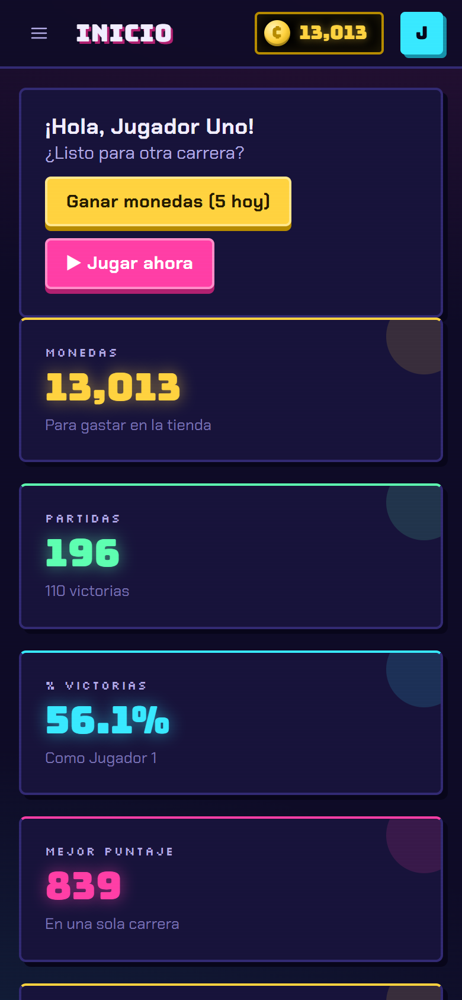
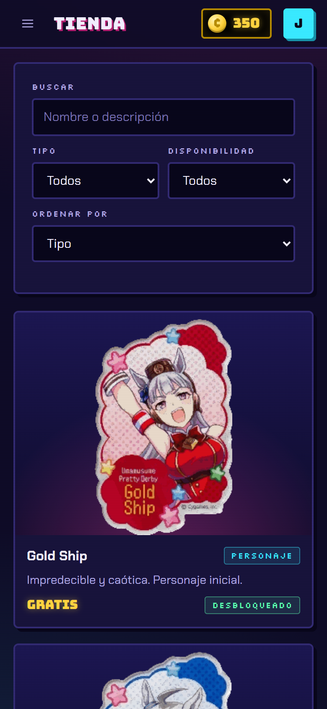
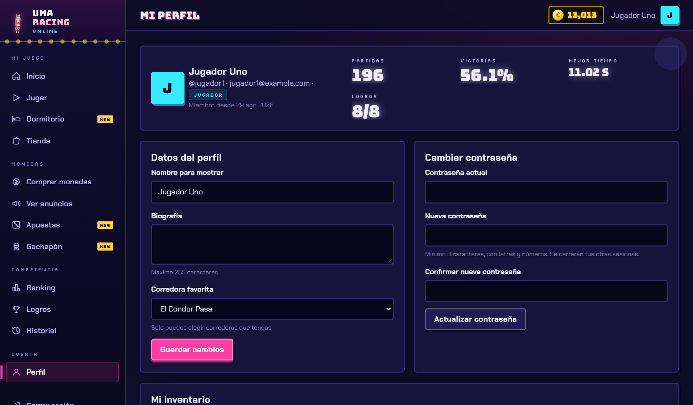
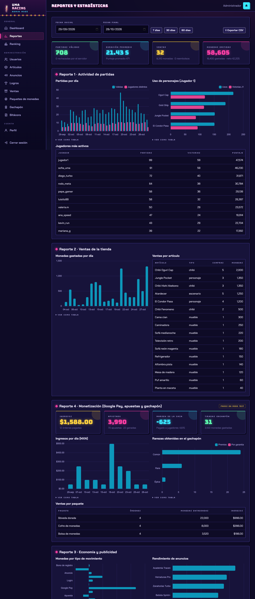
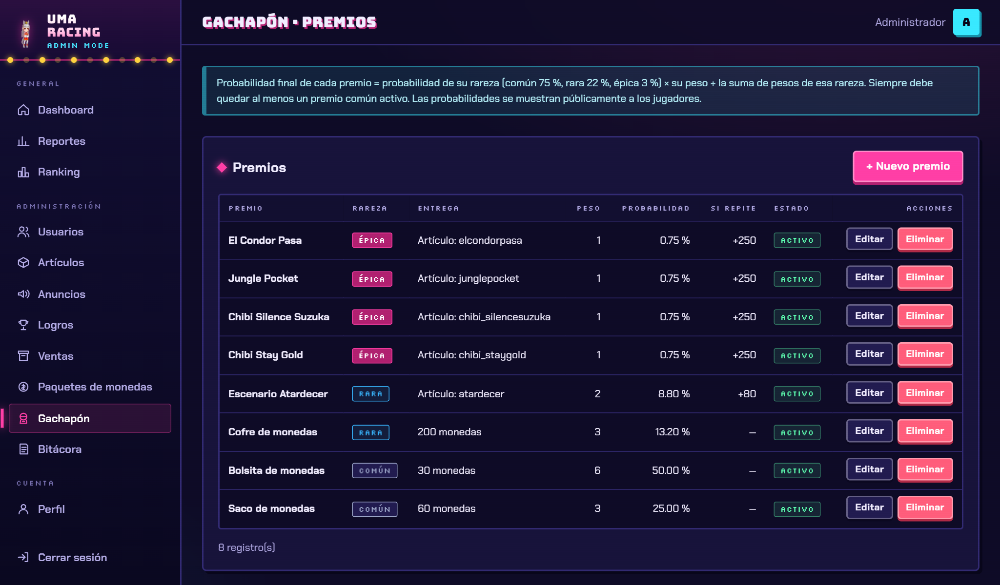
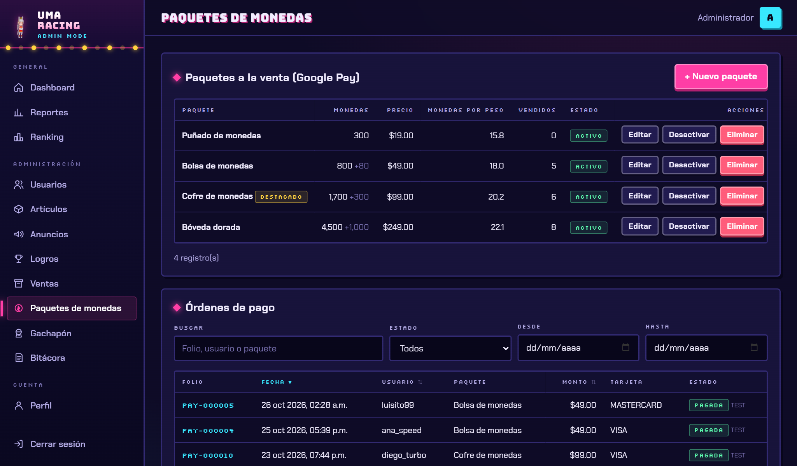
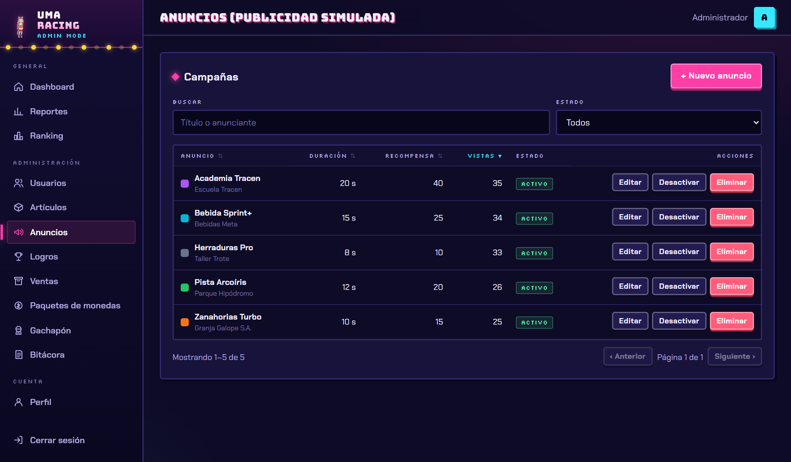
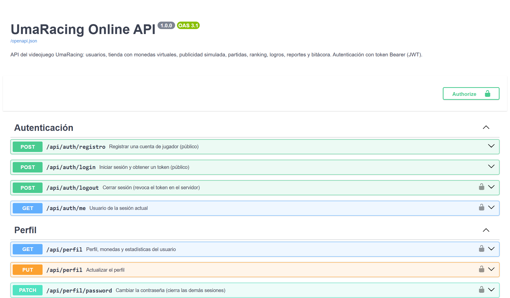
/docs.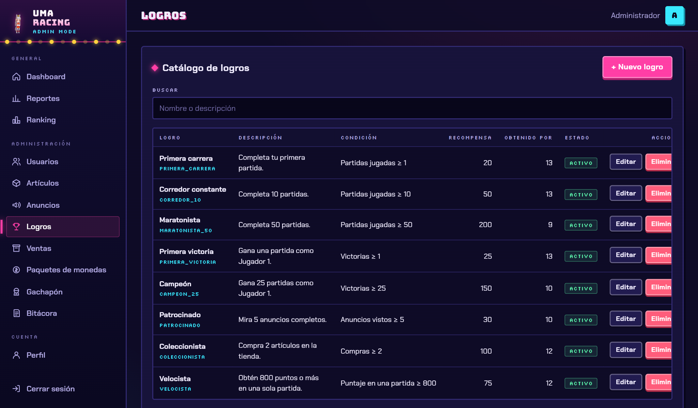
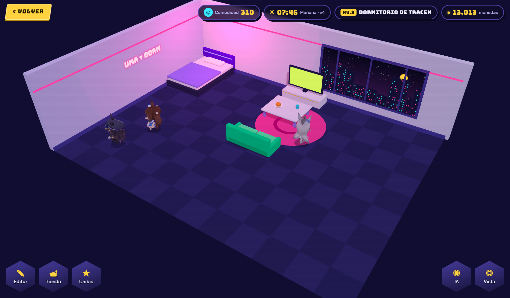
dormitorio.html) con sus botones de edición, tienda, chibis, IA y vista.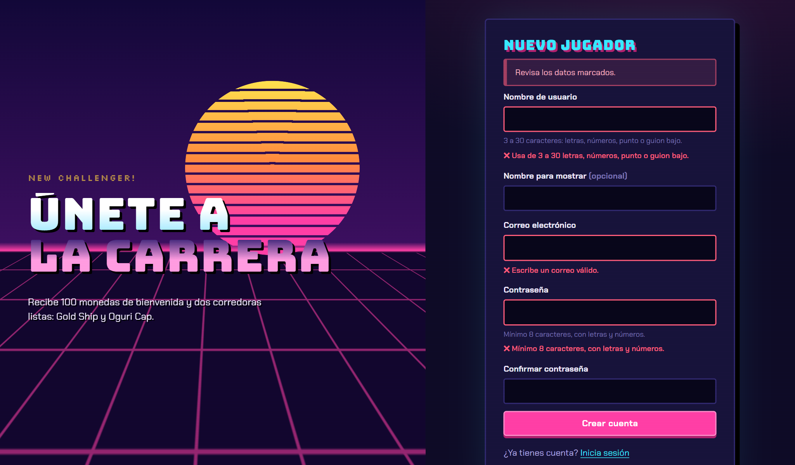
jugar.html: selección de corredora, tiempo de juego activo y reto de tiempo.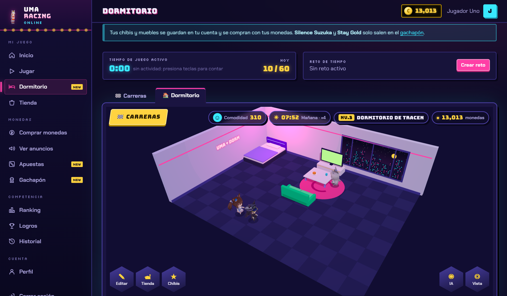
jugar.html: chibis de la cuenta, muebles acomodados, reloj del día, comodidad y saldo.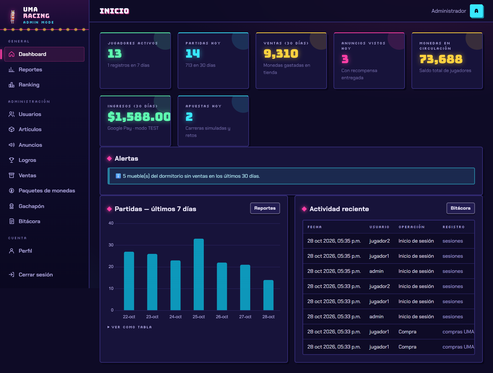
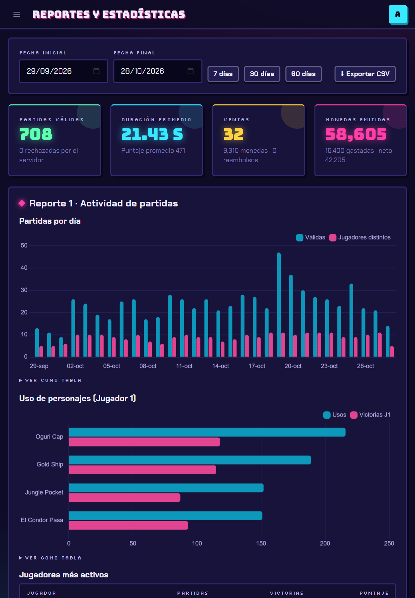